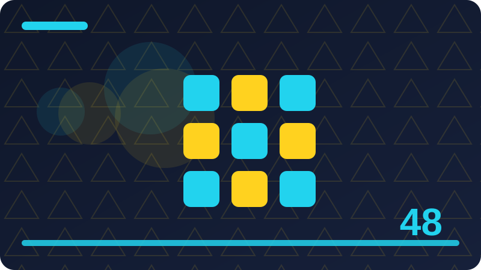

Chapter 48: Capstone Build Part 1: Structure and Storage

Section 1
This section is about recap: the PyDay plan, unchanged. It belongs in Capstone Build Part 1: Structure and Storage, where the wider theme is building PyDay's structure and its JSON storage first. Read it slowly, try the ideas on a small example of your own, and notice how recap: the PyDay plan, unchanged relates to work you have already done. The aim is not to collect a definition you can recite, but to build a working understanding of recap: the PyDay plan, unchanged that you can use when a real program needs it. As you read, keep a notebook or a scratch file open, jot down questions, and test any claim that surprises you, because active practice turns reading into skill. Throughout this capstone, the project stays exactly the same: PyDay, a command-line personal task-and-notes manager in pure Python 3 standard library only, in a single file called pyday.py, with its data in pyday-data.json. Its commands are add-task, list-tasks, complete-task, add-note, list-notes, and overview, where overview shows counts of tasks and notes and how many tasks are done versus pending. There is no framework, no server, no external package, no database, and no graphical interface, and that specification does not change from planning through to the finished program.
Consider the trade-off behind recap: the PyDay plan, unchanged: every choice that makes one thing easier tends to make something else harder, so name both sides before you decide. If you explain recap: the PyDay plan, unchanged to a fellow learner, listen for the point where they hesitate, because that hesitation usually marks the exact idea that needs a clearer example. Real projects rarely fail because one person did not know recap: the PyDay plan, unchanged; they fail because nobody agreed how it should be done, so shared agreement matters as much as individual skill. Try recap: the PyDay plan, unchanged on a tiny project of your own before you need it under pressure, so that mistakes happen where they are cheap and easy to fix. When something does not work with recap: the PyDay plan, unchanged, narrow the problem down: change one thing at a time, re-run the smallest possible check, and write down what each change taught you. Good practitioners of recap: the PyDay plan, unchanged leave traces for the next person: clear names, a brief comment where the reason is not obvious, and a test or example that shows the intended behaviour.
You do not need to master every detail of recap: the PyDay plan, unchanged at once; learn the core idea well, use it regularly, and let the finer details arrive as real problems demand them.
To finish, return to recap: the PyDay plan, unchanged and summarise it in two or three sentences of your own, without looking back at this section. If you cannot, re-read the part that felt least clear and try a fresh small example, because a second attempt often succeeds where the first one only introduced the idea. Then move on with confidence: you do not need perfection here, only a solid, usable grasp that later practice will deepen.
Check: How would you explain recap: the PyDay plan, unchanged to another learner, and what small example would you use?
Section 2
This section is about creating pyday.py, the single file. It belongs in Capstone Build Part 1: Structure and Storage, where the wider theme is building PyDay's structure and its JSON storage first. Read it slowly, try the ideas on a small example of your own, and notice how creating pyday.py, the single file relates to work you have already done. The aim is not to collect a definition you can recite, but to build a working understanding of creating pyday.py, the single file that you can use when a real program needs it. As you read, keep a notebook or a scratch file open, jot down questions, and test any claim that surprises you, because active practice turns reading into skill. Throughout this capstone, the project stays exactly the same: PyDay, a command-line personal task-and-notes manager in pure Python 3 standard library only, in a single file called pyday.py, with its data in pyday-data.json. Its commands are add-task, list-tasks, complete-task, add-note, list-notes, and overview, where overview shows counts of tasks and notes and how many tasks are done versus pending. There is no framework, no server, no external package, no database, and no graphical interface, and that specification does not change from planning through to the finished program.
Ask yourself who benefits from creating pyday.py, the single file in this particular project, and who pays the cost in extra time or complexity, because a technique is only worth it when the benefit is real. A helpful exercise with creating pyday.py, the single file is to compare two versions of the same small program, one that uses the idea well and one that does not, and to list exactly what differs. Documentation, naming, and structure all support creating pyday.py, the single file, and none of them is a substitute for the others; together they make a project that other people can actually join. When you review your own work on creating pyday.py, the single file, read it as a stranger would, from the top, without remembering what you meant, and mark every place where you have to guess. The Python 3 standard library and the wider community both favour creating pyday.py, the single file done simply and explicitly, which is why short, readable solutions tend to age better than elaborate ones. If creating pyday.py, the single file feels confusing, break it into three questions: what is the input, what should the output be, and what rule connects them, then answer each question separately.
Planning helps with creating pyday.py, the single file just as much as coding does, because ten minutes spent sketching the shape of the solution often saves an hour of rewriting later.
To finish, return to creating pyday.py, the single file and summarise it in two or three sentences of your own, without looking back at this section. If you cannot, re-read the part that felt least clear and try a fresh small example, because a second attempt often succeeds where the first one only introduced the idea. Then move on with confidence: you do not need perfection here, only a solid, usable grasp that later practice will deepen.
Check: What goes wrong most easily with creating pyday.py, the single file, and how would you spot that problem early?
Section 3
This section is about the project folder and its layout. It belongs in Capstone Build Part 1: Structure and Storage, where the wider theme is building PyDay's structure and its JSON storage first. Read it slowly, try the ideas on a small example of your own, and notice how the project folder and its layout relates to work you have already done. The aim is not to collect a definition you can recite, but to build a working understanding of the project folder and its layout that you can use when a real program needs it. As you read, keep a notebook or a scratch file open, jot down questions, and test any claim that surprises you, because active practice turns reading into skill. Throughout this capstone, the project stays exactly the same: PyDay, a command-line personal task-and-notes manager in pure Python 3 standard library only, in a single file called pyday.py, with its data in pyday-data.json. Its commands are add-task, list-tasks, complete-task, add-note, list-notes, and overview, where overview shows counts of tasks and notes and how many tasks are done versus pending. There is no framework, no server, no external package, no database, and no graphical interface, and that specification does not change from planning through to the finished program.
Keep the project folder and its layout close to the problem it solves, and resist the temptation to build a general system for problems you do not yet have, since unused generality is a maintenance burden. Feedback improves the project folder and its layout faster than solitary practice alone, so show your work early, ask specific questions, and treat corrections as information rather than criticism. A reliable sign that you are getting the project folder and its layout right is that you can change one part of a program without fearing that an unrelated part will quietly break. Remember that the project folder and its layout is a means, not an end: the goal is a program that works, can be understood, and can be changed safely, and every technique should be judged against that goal. In a team, the project folder and its layout works best when everyone can see the same standard, the same examples, and the same reasons, rather than relying on unwritten rules known only to a few people. When you finish practising the project folder and its layout, tidy up: remove experiments you no longer need, keep the example that taught you most, and write one sentence about what you will do differently next time.
To finish, return to the project folder and its layout and summarise it in two or three sentences of your own, without looking back at this section. If you cannot, re-read the part that felt least clear and try a fresh small example, because a second attempt often succeeds where the first one only introduced the idea. Then move on with confidence: you do not need perfection here, only a solid, usable grasp that later practice will deepen.
Check: When would you choose the project folder and its layout, and when would a simpler approach be the better choice?
Section 4
This section is about how pyday.py is organised, top to bottom. It belongs in Capstone Build Part 1: Structure and Storage, where the wider theme is building PyDay's structure and its JSON storage first. Read it slowly, try the ideas on a small example of your own, and notice how how pyday.py is organised, top to bottom relates to work you have already done. The aim is not to collect a definition you can recite, but to build a working understanding of how pyday.py is organised, top to bottom that you can use when a real program needs it. As you read, keep a notebook or a scratch file open, jot down questions, and test any claim that surprises you, because active practice turns reading into skill. Throughout this capstone, the project stays exactly the same: PyDay, a command-line personal task-and-notes manager in pure Python 3 standard library only, in a single file called pyday.py, with its data in pyday-data.json. Its commands are add-task, list-tasks, complete-task, add-note, list-notes, and overview, where overview shows counts of tasks and notes and how many tasks are done versus pending. There is no framework, no server, no external package, no database, and no graphical interface, and that specification does not change from planning through to the finished program.
Look for the simplest version of how pyday.py is organised, top to bottom that still solves the problem in front of you, and only reach for a more powerful version when the simple one has clearly run out of room. Finally, connect how pyday.py is organised, top to bottom to work you have already done: notice where an earlier chapter's idea reappears here in a new form, because that recognition is what turns separate lessons into real skill. One useful way to think about how pyday.py is organised, top to bottom is to ask what it changes for the person who will read, use, or maintain the work afterwards, not only for the person who writes it first. Beginners often treat how pyday.py is organised, top to bottom as a single trick to memorise, but in real work it is a habit: a small decision, repeated consistently, that keeps a growing project understandable. A good test of whether you understand how pyday.py is organised, top to bottom is whether you can describe it in plain language, give a small example, and explain what goes wrong when it is missing. In Python 3, how pyday.py is organised, top to bottom usually rewards clarity over cleverness, because code is read far more often than it is written, and the next reader may be you in six months.
To finish, return to how pyday.py is organised, top to bottom and summarise it in two or three sentences of your own, without looking back at this section. If you cannot, re-read the part that felt least clear and try a fresh small example, because a second attempt often succeeds where the first one only introduced the idea. Then move on with confidence: you do not need perfection here, only a solid, usable grasp that later practice will deepen.
Check: What would a good, small practice exercise for how pyday.py is organised, top to bottom look like, and what would success mean?
Section 5
This section is about the main function and command dispatch, in outline. It belongs in Capstone Build Part 1: Structure and Storage, where the wider theme is building PyDay's structure and its JSON storage first. Read it slowly, try the ideas on a small example of your own, and notice how the main function and command dispatch, in outline relates to work you have already done. The aim is not to collect a definition you can recite, but to build a working understanding of the main function and command dispatch, in outline that you can use when a real program needs it. As you read, keep a notebook or a scratch file open, jot down questions, and test any claim that surprises you, because active practice turns reading into skill. Throughout this capstone, the project stays exactly the same: PyDay, a command-line personal task-and-notes manager in pure Python 3 standard library only, in a single file called pyday.py, with its data in pyday-data.json. Its commands are add-task, list-tasks, complete-task, add-note, list-notes, and overview, where overview shows counts of tasks and notes and how many tasks are done versus pending. There is no framework, no server, no external package, no database, and no graphical interface, and that specification does not change from planning through to the finished program.
A common mistake with the main function and command dispatch, in outline is to add complexity before the simple version works, which makes it hard to tell whether a problem comes from the new idea or from an earlier error. It helps to keep a short note of what you tried with the main function and command dispatch, in outline, what happened, and what you changed, because that record turns a confusing afternoon into a lesson you can reuse. Consider the trade-off behind the main function and command dispatch, in outline: every choice that makes one thing easier tends to make something else harder, so name both sides before you decide. If you explain the main function and command dispatch, in outline to a fellow learner, listen for the point where they hesitate, because that hesitation usually marks the exact idea that needs a clearer example. Real projects rarely fail because one person did not know the main function and command dispatch, in outline; they fail because nobody agreed how it should be done, so shared agreement matters as much as individual skill. Try the main function and command dispatch, in outline on a tiny project of your own before you need it under pressure, so that mistakes happen where they are cheap and easy to fix.
To finish, return to the main function and command dispatch, in outline and summarise it in two or three sentences of your own, without looking back at this section. If you cannot, re-read the part that felt least clear and try a fresh small example, because a second attempt often succeeds where the first one only introduced the idea. Then move on with confidence: you do not need perfection here, only a solid, usable grasp that later practice will deepen.
Check: How does the main function and command dispatch, in outline connect to the other ideas in this chapter, and why does that connection matter?
Section 6
This section is about loading pyday-data.json safely. It belongs in Capstone Build Part 1: Structure and Storage, where the wider theme is building PyDay's structure and its JSON storage first. Read it slowly, try the ideas on a small example of your own, and notice how loading pyday-data.json safely relates to work you have already done. The aim is not to collect a definition you can recite, but to build a working understanding of loading pyday-data.json safely that you can use when a real program needs it. As you read, keep a notebook or a scratch file open, jot down questions, and test any claim that surprises you, because active practice turns reading into skill. Throughout this capstone, the project stays exactly the same: PyDay, a command-line personal task-and-notes manager in pure Python 3 standard library only, in a single file called pyday.py, with its data in pyday-data.json. Its commands are add-task, list-tasks, complete-task, add-note, list-notes, and overview, where overview shows counts of tasks and notes and how many tasks are done versus pending. There is no framework, no server, no external package, no database, and no graphical interface, and that specification does not change from planning through to the finished program.
Good practitioners of loading pyday-data.json safely leave traces for the next person: clear names, a brief comment where the reason is not obvious, and a test or example that shows the intended behaviour. You do not need to master every detail of loading pyday-data.json safely at once; learn the core idea well, use it regularly, and let the finer details arrive as real problems demand them. Ask yourself who benefits from loading pyday-data.json safely in this particular project, and who pays the cost in extra time or complexity, because a technique is only worth it when the benefit is real. A helpful exercise with loading pyday-data.json safely is to compare two versions of the same small program, one that uses the idea well and one that does not, and to list exactly what differs. Documentation, naming, and structure all support loading pyday-data.json safely, and none of them is a substitute for the others; together they make a project that other people can actually join. When you review your own work on loading pyday-data.json safely, read it as a stranger would, from the top, without remembering what you meant, and mark every place where you have to guess.
The Python 3 standard library and the wider community both favour loading pyday-data.json safely done simply and explicitly, which is why short, readable solutions tend to age better than elaborate ones.
To finish, return to loading pyday-data.json safely and summarise it in two or three sentences of your own, without looking back at this section. If you cannot, re-read the part that felt least clear and try a fresh small example, because a second attempt often succeeds where the first one only introduced the idea. Then move on with confidence: you do not need perfection here, only a solid, usable grasp that later practice will deepen.
Check: How would you explain loading pyday-data.json safely to another learner, and what small example would you use?
Section 7
This section is about what happens when pyday-data.json is missing. It belongs in Capstone Build Part 1: Structure and Storage, where the wider theme is building PyDay's structure and its JSON storage first. Read it slowly, try the ideas on a small example of your own, and notice how what happens when pyday-data.json is missing relates to work you have already done. The aim is not to collect a definition you can recite, but to build a working understanding of what happens when pyday-data.json is missing that you can use when a real program needs it. As you read, keep a notebook or a scratch file open, jot down questions, and test any claim that surprises you, because active practice turns reading into skill. Throughout this capstone, the project stays exactly the same: PyDay, a command-line personal task-and-notes manager in pure Python 3 standard library only, in a single file called pyday.py, with its data in pyday-data.json. Its commands are add-task, list-tasks, complete-task, add-note, list-notes, and overview, where overview shows counts of tasks and notes and how many tasks are done versus pending. There is no framework, no server, no external package, no database, and no graphical interface, and that specification does not change from planning through to the finished program.
If what happens when pyday-data.json is missing feels confusing, break it into three questions: what is the input, what should the output be, and what rule connects them, then answer each question separately. Planning helps with what happens when pyday-data.json is missing just as much as coding does, because ten minutes spent sketching the shape of the solution often saves an hour of rewriting later. Keep what happens when pyday-data.json is missing close to the problem it solves, and resist the temptation to build a general system for problems you do not yet have, since unused generality is a maintenance burden. Feedback improves what happens when pyday-data.json is missing faster than solitary practice alone, so show your work early, ask specific questions, and treat corrections as information rather than criticism. A reliable sign that you are getting what happens when pyday-data.json is missing right is that you can change one part of a program without fearing that an unrelated part will quietly break. Remember that what happens when pyday-data.json is missing is a means, not an end: the goal is a program that works, can be understood, and can be changed safely, and every technique should be judged against that goal.
In a team, what happens when pyday-data.json is missing works best when everyone can see the same standard, the same examples, and the same reasons, rather than relying on unwritten rules known only to a few people.
To finish, return to what happens when pyday-data.json is missing and summarise it in two or three sentences of your own, without looking back at this section. If you cannot, re-read the part that felt least clear and try a fresh small example, because a second attempt often succeeds where the first one only introduced the idea. Then move on with confidence: you do not need perfection here, only a solid, usable grasp that later practice will deepen.
Check: What goes wrong most easily with what happens when pyday-data.json is missing, and how would you spot that problem early?
Section 8
This section is about what happens when pyday-data.json is empty. It belongs in Capstone Build Part 1: Structure and Storage, where the wider theme is building PyDay's structure and its JSON storage first. Read it slowly, try the ideas on a small example of your own, and notice how what happens when pyday-data.json is empty relates to work you have already done. The aim is not to collect a definition you can recite, but to build a working understanding of what happens when pyday-data.json is empty that you can use when a real program needs it. As you read, keep a notebook or a scratch file open, jot down questions, and test any claim that surprises you, because active practice turns reading into skill. Throughout this capstone, the project stays exactly the same: PyDay, a command-line personal task-and-notes manager in pure Python 3 standard library only, in a single file called pyday.py, with its data in pyday-data.json. Its commands are add-task, list-tasks, complete-task, add-note, list-notes, and overview, where overview shows counts of tasks and notes and how many tasks are done versus pending. There is no framework, no server, no external package, no database, and no graphical interface, and that specification does not change from planning through to the finished program.
When you finish practising what happens when pyday-data.json is empty, tidy up: remove experiments you no longer need, keep the example that taught you most, and write one sentence about what you will do differently next time. The difference between knowing about what happens when pyday-data.json is empty and being able to use it is practice under realistic conditions, so build something small, break it deliberately, and fix it again. Look for the simplest version of what happens when pyday-data.json is empty that still solves the problem in front of you, and only reach for a more powerful version when the simple one has clearly run out of room. Finally, connect what happens when pyday-data.json is empty to work you have already done: notice where an earlier chapter's idea reappears here in a new form, because that recognition is what turns separate lessons into real skill. One useful way to think about what happens when pyday-data.json is empty is to ask what it changes for the person who will read, use, or maintain the work afterwards, not only for the person who writes it first. Beginners often treat what happens when pyday-data.json is empty as a single trick to memorise, but in real work it is a habit: a small decision, repeated consistently, that keeps a growing project understandable.
To finish, return to what happens when pyday-data.json is empty and summarise it in two or three sentences of your own, without looking back at this section. If you cannot, re-read the part that felt least clear and try a fresh small example, because a second attempt often succeeds where the first one only introduced the idea. Then move on with confidence: you do not need perfection here, only a solid, usable grasp that later practice will deepen.
Check: When would you choose what happens when pyday-data.json is empty, and when would a simpler approach be the better choice?
Section 9
This section is about what happens when pyday-data.json is damaged. It belongs in Capstone Build Part 1: Structure and Storage, where the wider theme is building PyDay's structure and its JSON storage first. Read it slowly, try the ideas on a small example of your own, and notice how what happens when pyday-data.json is damaged relates to work you have already done. The aim is not to collect a definition you can recite, but to build a working understanding of what happens when pyday-data.json is damaged that you can use when a real program needs it. As you read, keep a notebook or a scratch file open, jot down questions, and test any claim that surprises you, because active practice turns reading into skill. Throughout this capstone, the project stays exactly the same: PyDay, a command-line personal task-and-notes manager in pure Python 3 standard library only, in a single file called pyday.py, with its data in pyday-data.json. Its commands are add-task, list-tasks, complete-task, add-note, list-notes, and overview, where overview shows counts of tasks and notes and how many tasks are done versus pending. There is no framework, no server, no external package, no database, and no graphical interface, and that specification does not change from planning through to the finished program.
In Python 3, what happens when pyday-data.json is damaged usually rewards clarity over cleverness, because code is read far more often than it is written, and the next reader may be you in six months. When you practise what happens when pyday-data.json is damaged, start with the smallest case that still shows the idea, check that it behaves as you expect, and only then add the next complication. A common mistake with what happens when pyday-data.json is damaged is to add complexity before the simple version works, which makes it hard to tell whether a problem comes from the new idea or from an earlier error. It helps to keep a short note of what you tried with what happens when pyday-data.json is damaged, what happened, and what you changed, because that record turns a confusing afternoon into a lesson you can reuse. Consider the trade-off behind what happens when pyday-data.json is damaged: every choice that makes one thing easier tends to make something else harder, so name both sides before you decide. If you explain what happens when pyday-data.json is damaged to a fellow learner, listen for the point where they hesitate, because that hesitation usually marks the exact idea that needs a clearer example.
To finish, return to what happens when pyday-data.json is damaged and summarise it in two or three sentences of your own, without looking back at this section. If you cannot, re-read the part that felt least clear and try a fresh small example, because a second attempt often succeeds where the first one only introduced the idea. Then move on with confidence: you do not need perfection here, only a solid, usable grasp that later practice will deepen.
Check: What would a good, small practice exercise for what happens when pyday-data.json is damaged look like, and what would success mean?
Section 10
This section is about saving pyday-data.json safely. It belongs in Capstone Build Part 1: Structure and Storage, where the wider theme is building PyDay's structure and its JSON storage first. Read it slowly, try the ideas on a small example of your own, and notice how saving pyday-data.json safely relates to work you have already done. The aim is not to collect a definition you can recite, but to build a working understanding of saving pyday-data.json safely that you can use when a real program needs it. As you read, keep a notebook or a scratch file open, jot down questions, and test any claim that surprises you, because active practice turns reading into skill. Throughout this capstone, the project stays exactly the same: PyDay, a command-line personal task-and-notes manager in pure Python 3 standard library only, in a single file called pyday.py, with its data in pyday-data.json. Its commands are add-task, list-tasks, complete-task, add-note, list-notes, and overview, where overview shows counts of tasks and notes and how many tasks are done versus pending. There is no framework, no server, no external package, no database, and no graphical interface, and that specification does not change from planning through to the finished program.
Try saving pyday-data.json safely on a tiny project of your own before you need it under pressure, so that mistakes happen where they are cheap and easy to fix. When something does not work with saving pyday-data.json safely, narrow the problem down: change one thing at a time, re-run the smallest possible check, and write down what each change taught you. Good practitioners of saving pyday-data.json safely leave traces for the next person: clear names, a brief comment where the reason is not obvious, and a test or example that shows the intended behaviour. You do not need to master every detail of saving pyday-data.json safely at once; learn the core idea well, use it regularly, and let the finer details arrive as real problems demand them. Ask yourself who benefits from saving pyday-data.json safely in this particular project, and who pays the cost in extra time or complexity, because a technique is only worth it when the benefit is real. A helpful exercise with saving pyday-data.json safely is to compare two versions of the same small program, one that uses the idea well and one that does not, and to list exactly what differs.
Documentation, naming, and structure all support saving pyday-data.json safely, and none of them is a substitute for the others; together they make a project that other people can actually join.
To finish, return to saving pyday-data.json safely and summarise it in two or three sentences of your own, without looking back at this section. If you cannot, re-read the part that felt least clear and try a fresh small example, because a second attempt often succeeds where the first one only introduced the idea. Then move on with confidence: you do not need perfection here, only a solid, usable grasp that later practice will deepen.
Check: How does saving pyday-data.json safely connect to the other ideas in this chapter, and why does that connection matter?
Section 11
This section is about atomic-style saving with a temporary file. It belongs in Capstone Build Part 1: Structure and Storage, where the wider theme is building PyDay's structure and its JSON storage first. Read it slowly, try the ideas on a small example of your own, and notice how atomic-style saving with a temporary file relates to work you have already done. The aim is not to collect a definition you can recite, but to build a working understanding of atomic-style saving with a temporary file that you can use when a real program needs it. As you read, keep a notebook or a scratch file open, jot down questions, and test any claim that surprises you, because active practice turns reading into skill. Throughout this capstone, the project stays exactly the same: PyDay, a command-line personal task-and-notes manager in pure Python 3 standard library only, in a single file called pyday.py, with its data in pyday-data.json. Its commands are add-task, list-tasks, complete-task, add-note, list-notes, and overview, where overview shows counts of tasks and notes and how many tasks are done versus pending. There is no framework, no server, no external package, no database, and no graphical interface, and that specification does not change from planning through to the finished program.
When you review your own work on atomic-style saving with a temporary file, read it as a stranger would, from the top, without remembering what you meant, and mark every place where you have to guess. The Python 3 standard library and the wider community both favour atomic-style saving with a temporary file done simply and explicitly, which is why short, readable solutions tend to age better than elaborate ones. If atomic-style saving with a temporary file feels confusing, break it into three questions: what is the input, what should the output be, and what rule connects them, then answer each question separately. Planning helps with atomic-style saving with a temporary file just as much as coding does, because ten minutes spent sketching the shape of the solution often saves an hour of rewriting later. Keep atomic-style saving with a temporary file close to the problem it solves, and resist the temptation to build a general system for problems you do not yet have, since unused generality is a maintenance burden. Feedback improves atomic-style saving with a temporary file faster than solitary practice alone, so show your work early, ask specific questions, and treat corrections as information rather than criticism.
A reliable sign that you are getting atomic-style saving with a temporary file right is that you can change one part of a program without fearing that an unrelated part will quietly break.
To finish, return to atomic-style saving with a temporary file and summarise it in two or three sentences of your own, without looking back at this section. If you cannot, re-read the part that felt least clear and try a fresh small example, because a second attempt often succeeds where the first one only introduced the idea. Then move on with confidence: you do not need perfection here, only a solid, usable grasp that later practice will deepen.
Check: How would you explain atomic-style saving with a temporary file to another learner, and what small example would you use?
Section 12
This section is about keeping a backup before overwriting. It belongs in Capstone Build Part 1: Structure and Storage, where the wider theme is building PyDay's structure and its JSON storage first. Read it slowly, try the ideas on a small example of your own, and notice how keeping a backup before overwriting relates to work you have already done. The aim is not to collect a definition you can recite, but to build a working understanding of keeping a backup before overwriting that you can use when a real program needs it. As you read, keep a notebook or a scratch file open, jot down questions, and test any claim that surprises you, because active practice turns reading into skill. Throughout this capstone, the project stays exactly the same: PyDay, a command-line personal task-and-notes manager in pure Python 3 standard library only, in a single file called pyday.py, with its data in pyday-data.json. Its commands are add-task, list-tasks, complete-task, add-note, list-notes, and overview, where overview shows counts of tasks and notes and how many tasks are done versus pending. There is no framework, no server, no external package, no database, and no graphical interface, and that specification does not change from planning through to the finished program.
Remember that keeping a backup before overwriting is a means, not an end: the goal is a program that works, can be understood, and can be changed safely, and every technique should be judged against that goal. In a team, keeping a backup before overwriting works best when everyone can see the same standard, the same examples, and the same reasons, rather than relying on unwritten rules known only to a few people. When you finish practising keeping a backup before overwriting, tidy up: remove experiments you no longer need, keep the example that taught you most, and write one sentence about what you will do differently next time. The difference between knowing about keeping a backup before overwriting and being able to use it is practice under realistic conditions, so build something small, break it deliberately, and fix it again. Look for the simplest version of keeping a backup before overwriting that still solves the problem in front of you, and only reach for a more powerful version when the simple one has clearly run out of room. Finally, connect keeping a backup before overwriting to work you have already done: notice where an earlier chapter's idea reappears here in a new form, because that recognition is what turns separate lessons into real skill.
To finish, return to keeping a backup before overwriting and summarise it in two or three sentences of your own, without looking back at this section. If you cannot, re-read the part that felt least clear and try a fresh small example, because a second attempt often succeeds where the first one only introduced the idea. Then move on with confidence: you do not need perfection here, only a solid, usable grasp that later practice will deepen.
Check: What goes wrong most easily with keeping a backup before overwriting, and how would you spot that problem early?
Section 13
This section is about the default data shape: tasks and notes. It belongs in Capstone Build Part 1: Structure and Storage, where the wider theme is building PyDay's structure and its JSON storage first. Read it slowly, try the ideas on a small example of your own, and notice how the default data shape: tasks and notes relates to work you have already done. The aim is not to collect a definition you can recite, but to build a working understanding of the default data shape: tasks and notes that you can use when a real program needs it. As you read, keep a notebook or a scratch file open, jot down questions, and test any claim that surprises you, because active practice turns reading into skill. Throughout this capstone, the project stays exactly the same: PyDay, a command-line personal task-and-notes manager in pure Python 3 standard library only, in a single file called pyday.py, with its data in pyday-data.json. Its commands are add-task, list-tasks, complete-task, add-note, list-notes, and overview, where overview shows counts of tasks and notes and how many tasks are done versus pending. There is no framework, no server, no external package, no database, and no graphical interface, and that specification does not change from planning through to the finished program.
Beginners often treat the default data shape: tasks and notes as a single trick to memorise, but in real work it is a habit: a small decision, repeated consistently, that keeps a growing project understandable. A good test of whether you understand the default data shape: tasks and notes is whether you can describe it in plain language, give a small example, and explain what goes wrong when it is missing. In Python 3, the default data shape: tasks and notes usually rewards clarity over cleverness, because code is read far more often than it is written, and the next reader may be you in six months. When you practise the default data shape: tasks and notes, start with the smallest case that still shows the idea, check that it behaves as you expect, and only then add the next complication. A common mistake with the default data shape: tasks and notes is to add complexity before the simple version works, which makes it hard to tell whether a problem comes from the new idea or from an earlier error. It helps to keep a short note of what you tried with the default data shape: tasks and notes, what happened, and what you changed, because that record turns a confusing afternoon into a lesson you can reuse.
To finish, return to the default data shape: tasks and notes and summarise it in two or three sentences of your own, without looking back at this section. If you cannot, re-read the part that felt least clear and try a fresh small example, because a second attempt often succeeds where the first one only introduced the idea. Then move on with confidence: you do not need perfection here, only a solid, usable grasp that later practice will deepen.
Check: When would you choose the default data shape: tasks and notes, and when would a simpler approach be the better choice?
Section 14
This section is about task records in code: fields and types. It belongs in Capstone Build Part 1: Structure and Storage, where the wider theme is building PyDay's structure and its JSON storage first. Read it slowly, try the ideas on a small example of your own, and notice how task records in code: fields and types relates to work you have already done. The aim is not to collect a definition you can recite, but to build a working understanding of task records in code: fields and types that you can use when a real program needs it. As you read, keep a notebook or a scratch file open, jot down questions, and test any claim that surprises you, because active practice turns reading into skill. Throughout this capstone, the project stays exactly the same: PyDay, a command-line personal task-and-notes manager in pure Python 3 standard library only, in a single file called pyday.py, with its data in pyday-data.json. Its commands are add-task, list-tasks, complete-task, add-note, list-notes, and overview, where overview shows counts of tasks and notes and how many tasks are done versus pending. There is no framework, no server, no external package, no database, and no graphical interface, and that specification does not change from planning through to the finished program.
If you explain task records in code: fields and types to a fellow learner, listen for the point where they hesitate, because that hesitation usually marks the exact idea that needs a clearer example. Real projects rarely fail because one person did not know task records in code: fields and types; they fail because nobody agreed how it should be done, so shared agreement matters as much as individual skill. Try task records in code: fields and types on a tiny project of your own before you need it under pressure, so that mistakes happen where they are cheap and easy to fix. When something does not work with task records in code: fields and types, narrow the problem down: change one thing at a time, re-run the smallest possible check, and write down what each change taught you. Good practitioners of task records in code: fields and types leave traces for the next person: clear names, a brief comment where the reason is not obvious, and a test or example that shows the intended behaviour. You do not need to master every detail of task records in code: fields and types at once; learn the core idea well, use it regularly, and let the finer details arrive as real problems demand them.
To finish, return to task records in code: fields and types and summarise it in two or three sentences of your own, without looking back at this section. If you cannot, re-read the part that felt least clear and try a fresh small example, because a second attempt often succeeds where the first one only introduced the idea. Then move on with confidence: you do not need perfection here, only a solid, usable grasp that later practice will deepen.
Check: What would a good, small practice exercise for task records in code: fields and types look like, and what would success mean?
Section 15
This section is about note records in code: fields and types. It belongs in Capstone Build Part 1: Structure and Storage, where the wider theme is building PyDay's structure and its JSON storage first. Read it slowly, try the ideas on a small example of your own, and notice how note records in code: fields and types relates to work you have already done. The aim is not to collect a definition you can recite, but to build a working understanding of note records in code: fields and types that you can use when a real program needs it. As you read, keep a notebook or a scratch file open, jot down questions, and test any claim that surprises you, because active practice turns reading into skill. Throughout this capstone, the project stays exactly the same: PyDay, a command-line personal task-and-notes manager in pure Python 3 standard library only, in a single file called pyday.py, with its data in pyday-data.json. Its commands are add-task, list-tasks, complete-task, add-note, list-notes, and overview, where overview shows counts of tasks and notes and how many tasks are done versus pending. There is no framework, no server, no external package, no database, and no graphical interface, and that specification does not change from planning through to the finished program.
A helpful exercise with note records in code: fields and types is to compare two versions of the same small program, one that uses the idea well and one that does not, and to list exactly what differs. Documentation, naming, and structure all support note records in code: fields and types, and none of them is a substitute for the others; together they make a project that other people can actually join. When you review your own work on note records in code: fields and types, read it as a stranger would, from the top, without remembering what you meant, and mark every place where you have to guess. The Python 3 standard library and the wider community both favour note records in code: fields and types done simply and explicitly, which is why short, readable solutions tend to age better than elaborate ones. If note records in code: fields and types feels confusing, break it into three questions: what is the input, what should the output be, and what rule connects them, then answer each question separately. Planning helps with note records in code: fields and types just as much as coding does, because ten minutes spent sketching the shape of the solution often saves an hour of rewriting later.
To finish, return to note records in code: fields and types and summarise it in two or three sentences of your own, without looking back at this section. If you cannot, re-read the part that felt least clear and try a fresh small example, because a second attempt often succeeds where the first one only introduced the idea. Then move on with confidence: you do not need perfection here, only a solid, usable grasp that later practice will deepen.
Check: How does note records in code: fields and types connect to the other ideas in this chapter, and why does that connection matter?
Section 16
This section is about generating the next identifier. It belongs in Capstone Build Part 1: Structure and Storage, where the wider theme is building PyDay's structure and its JSON storage first. Read it slowly, try the ideas on a small example of your own, and notice how generating the next identifier relates to work you have already done. The aim is not to collect a definition you can recite, but to build a working understanding of generating the next identifier that you can use when a real program needs it. As you read, keep a notebook or a scratch file open, jot down questions, and test any claim that surprises you, because active practice turns reading into skill. Throughout this capstone, the project stays exactly the same: PyDay, a command-line personal task-and-notes manager in pure Python 3 standard library only, in a single file called pyday.py, with its data in pyday-data.json. Its commands are add-task, list-tasks, complete-task, add-note, list-notes, and overview, where overview shows counts of tasks and notes and how many tasks are done versus pending. There is no framework, no server, no external package, no database, and no graphical interface, and that specification does not change from planning through to the finished program.
Feedback improves generating the next identifier faster than solitary practice alone, so show your work early, ask specific questions, and treat corrections as information rather than criticism. A reliable sign that you are getting generating the next identifier right is that you can change one part of a program without fearing that an unrelated part will quietly break. Remember that generating the next identifier is a means, not an end: the goal is a program that works, can be understood, and can be changed safely, and every technique should be judged against that goal. In a team, generating the next identifier works best when everyone can see the same standard, the same examples, and the same reasons, rather than relying on unwritten rules known only to a few people. When you finish practising generating the next identifier, tidy up: remove experiments you no longer need, keep the example that taught you most, and write one sentence about what you will do differently next time. The difference between knowing about generating the next identifier and being able to use it is practice under realistic conditions, so build something small, break it deliberately, and fix it again.
Look for the simplest version of generating the next identifier that still solves the problem in front of you, and only reach for a more powerful version when the simple one has clearly run out of room.
To finish, return to generating the next identifier and summarise it in two or three sentences of your own, without looking back at this section. If you cannot, re-read the part that felt least clear and try a fresh small example, because a second attempt often succeeds where the first one only introduced the idea. Then move on with confidence: you do not need perfection here, only a solid, usable grasp that later practice will deepen.
Check: How would you explain generating the next identifier to another learner, and what small example would you use?
Section 17
This section is about finding a task or note by identifier. It belongs in Capstone Build Part 1: Structure and Storage, where the wider theme is building PyDay's structure and its JSON storage first. Read it slowly, try the ideas on a small example of your own, and notice how finding a task or note by identifier relates to work you have already done. The aim is not to collect a definition you can recite, but to build a working understanding of finding a task or note by identifier that you can use when a real program needs it. As you read, keep a notebook or a scratch file open, jot down questions, and test any claim that surprises you, because active practice turns reading into skill. Throughout this capstone, the project stays exactly the same: PyDay, a command-line personal task-and-notes manager in pure Python 3 standard library only, in a single file called pyday.py, with its data in pyday-data.json. Its commands are add-task, list-tasks, complete-task, add-note, list-notes, and overview, where overview shows counts of tasks and notes and how many tasks are done versus pending. There is no framework, no server, no external package, no database, and no graphical interface, and that specification does not change from planning through to the finished program.
Finally, connect finding a task or note by identifier to work you have already done: notice where an earlier chapter's idea reappears here in a new form, because that recognition is what turns separate lessons into real skill. One useful way to think about finding a task or note by identifier is to ask what it changes for the person who will read, use, or maintain the work afterwards, not only for the person who writes it first. Beginners often treat finding a task or note by identifier as a single trick to memorise, but in real work it is a habit: a small decision, repeated consistently, that keeps a growing project understandable. A good test of whether you understand finding a task or note by identifier is whether you can describe it in plain language, give a small example, and explain what goes wrong when it is missing. In Python 3, finding a task or note by identifier usually rewards clarity over cleverness, because code is read far more often than it is written, and the next reader may be you in six months. When you practise finding a task or note by identifier, start with the smallest case that still shows the idea, check that it behaves as you expect, and only then add the next complication.
To finish, return to finding a task or note by identifier and summarise it in two or three sentences of your own, without looking back at this section. If you cannot, re-read the part that felt least clear and try a fresh small example, because a second attempt often succeeds where the first one only introduced the idea. Then move on with confidence: you do not need perfection here, only a solid, usable grasp that later practice will deepen.
Check: What goes wrong most easily with finding a task or note by identifier, and how would you spot that problem early?
Section 18
This section is about the first runnable skeleton. It belongs in Capstone Build Part 1: Structure and Storage, where the wider theme is building PyDay's structure and its JSON storage first. Read it slowly, try the ideas on a small example of your own, and notice how the first runnable skeleton relates to work you have already done. The aim is not to collect a definition you can recite, but to build a working understanding of the first runnable skeleton that you can use when a real program needs it. As you read, keep a notebook or a scratch file open, jot down questions, and test any claim that surprises you, because active practice turns reading into skill. Throughout this capstone, the project stays exactly the same: PyDay, a command-line personal task-and-notes manager in pure Python 3 standard library only, in a single file called pyday.py, with its data in pyday-data.json. Its commands are add-task, list-tasks, complete-task, add-note, list-notes, and overview, where overview shows counts of tasks and notes and how many tasks are done versus pending. There is no framework, no server, no external package, no database, and no graphical interface, and that specification does not change from planning through to the finished program.
It helps to keep a short note of what you tried with the first runnable skeleton, what happened, and what you changed, because that record turns a confusing afternoon into a lesson you can reuse. Consider the trade-off behind the first runnable skeleton: every choice that makes one thing easier tends to make something else harder, so name both sides before you decide. If you explain the first runnable skeleton to a fellow learner, listen for the point where they hesitate, because that hesitation usually marks the exact idea that needs a clearer example. Real projects rarely fail because one person did not know the first runnable skeleton; they fail because nobody agreed how it should be done, so shared agreement matters as much as individual skill. Try the first runnable skeleton on a tiny project of your own before you need it under pressure, so that mistakes happen where they are cheap and easy to fix. When something does not work with the first runnable skeleton, narrow the problem down: change one thing at a time, re-run the smallest possible check, and write down what each change taught you.
Good practitioners of the first runnable skeleton leave traces for the next person: clear names, a brief comment where the reason is not obvious, and a test or example that shows the intended behaviour.
To finish, return to the first runnable skeleton and summarise it in two or three sentences of your own, without looking back at this section. If you cannot, re-read the part that felt least clear and try a fresh small example, because a second attempt often succeeds where the first one only introduced the idea. Then move on with confidence: you do not need perfection here, only a solid, usable grasp that later practice will deepen.
Check: When would you choose the first runnable skeleton, and when would a simpler approach be the better choice?
Section 19
This section is about running pyday.py with no arguments. It belongs in Capstone Build Part 1: Structure and Storage, where the wider theme is building PyDay's structure and its JSON storage first. Read it slowly, try the ideas on a small example of your own, and notice how running pyday.py with no arguments relates to work you have already done. The aim is not to collect a definition you can recite, but to build a working understanding of running pyday.py with no arguments that you can use when a real program needs it. As you read, keep a notebook or a scratch file open, jot down questions, and test any claim that surprises you, because active practice turns reading into skill. Throughout this capstone, the project stays exactly the same: PyDay, a command-line personal task-and-notes manager in pure Python 3 standard library only, in a single file called pyday.py, with its data in pyday-data.json. Its commands are add-task, list-tasks, complete-task, add-note, list-notes, and overview, where overview shows counts of tasks and notes and how many tasks are done versus pending. There is no framework, no server, no external package, no database, and no graphical interface, and that specification does not change from planning through to the finished program.
You do not need to master every detail of running pyday.py with no arguments at once; learn the core idea well, use it regularly, and let the finer details arrive as real problems demand them. Ask yourself who benefits from running pyday.py with no arguments in this particular project, and who pays the cost in extra time or complexity, because a technique is only worth it when the benefit is real. A helpful exercise with running pyday.py with no arguments is to compare two versions of the same small program, one that uses the idea well and one that does not, and to list exactly what differs. Documentation, naming, and structure all support running pyday.py with no arguments, and none of them is a substitute for the others; together they make a project that other people can actually join. When you review your own work on running pyday.py with no arguments, read it as a stranger would, from the top, without remembering what you meant, and mark every place where you have to guess. The Python 3 standard library and the wider community both favour running pyday.py with no arguments done simply and explicitly, which is why short, readable solutions tend to age better than elaborate ones.
If running pyday.py with no arguments feels confusing, break it into three questions: what is the input, what should the output be, and what rule connects them, then answer each question separately.
To finish, return to running pyday.py with no arguments and summarise it in two or three sentences of your own, without looking back at this section. If you cannot, re-read the part that felt least clear and try a fresh small example, because a second attempt often succeeds where the first one only introduced the idea. Then move on with confidence: you do not need perfection here, only a solid, usable grasp that later practice will deepen.
Check: What would a good, small practice exercise for running pyday.py with no arguments look like, and what would success mean?
Section 20
This section is about help text for the six commands. It belongs in Capstone Build Part 1: Structure and Storage, where the wider theme is building PyDay's structure and its JSON storage first. Read it slowly, try the ideas on a small example of your own, and notice how help text for the six commands relates to work you have already done. The aim is not to collect a definition you can recite, but to build a working understanding of help text for the six commands that you can use when a real program needs it. As you read, keep a notebook or a scratch file open, jot down questions, and test any claim that surprises you, because active practice turns reading into skill. Throughout this capstone, the project stays exactly the same: PyDay, a command-line personal task-and-notes manager in pure Python 3 standard library only, in a single file called pyday.py, with its data in pyday-data.json. Its commands are add-task, list-tasks, complete-task, add-note, list-notes, and overview, where overview shows counts of tasks and notes and how many tasks are done versus pending. There is no framework, no server, no external package, no database, and no graphical interface, and that specification does not change from planning through to the finished program.
Planning helps with help text for the six commands just as much as coding does, because ten minutes spent sketching the shape of the solution often saves an hour of rewriting later. Keep help text for the six commands close to the problem it solves, and resist the temptation to build a general system for problems you do not yet have, since unused generality is a maintenance burden. Feedback improves help text for the six commands faster than solitary practice alone, so show your work early, ask specific questions, and treat corrections as information rather than criticism. A reliable sign that you are getting help text for the six commands right is that you can change one part of a program without fearing that an unrelated part will quietly break. Remember that help text for the six commands is a means, not an end: the goal is a program that works, can be understood, and can be changed safely, and every technique should be judged against that goal. In a team, help text for the six commands works best when everyone can see the same standard, the same examples, and the same reasons, rather than relying on unwritten rules known only to a few people.
When you finish practising help text for the six commands, tidy up: remove experiments you no longer need, keep the example that taught you most, and write one sentence about what you will do differently next time.
To finish, return to help text for the six commands and summarise it in two or three sentences of your own, without looking back at this section. If you cannot, re-read the part that felt least clear and try a fresh small example, because a second attempt often succeeds where the first one only introduced the idea. Then move on with confidence: you do not need perfection here, only a solid, usable grasp that later practice will deepen.
Check: How does help text for the six commands connect to the other ideas in this chapter, and why does that connection matter?
Section 21
This section is about stubs for add-task, list-tasks, and complete-task. It belongs in Capstone Build Part 1: Structure and Storage, where the wider theme is building PyDay's structure and its JSON storage first. Read it slowly, try the ideas on a small example of your own, and notice how stubs for add-task, list-tasks, and complete-task relates to work you have already done. The aim is not to collect a definition you can recite, but to build a working understanding of stubs for add-task, list-tasks, and complete-task that you can use when a real program needs it. As you read, keep a notebook or a scratch file open, jot down questions, and test any claim that surprises you, because active practice turns reading into skill. Throughout this capstone, the project stays exactly the same: PyDay, a command-line personal task-and-notes manager in pure Python 3 standard library only, in a single file called pyday.py, with its data in pyday-data.json. Its commands are add-task, list-tasks, complete-task, add-note, list-notes, and overview, where overview shows counts of tasks and notes and how many tasks are done versus pending. There is no framework, no server, no external package, no database, and no graphical interface, and that specification does not change from planning through to the finished program.
The difference between knowing about stubs for add-task, list-tasks, and complete-task and being able to use it is practice under realistic conditions, so build something small, break it deliberately, and fix it again. Look for the simplest version of stubs for add-task, list-tasks, and complete-task that still solves the problem in front of you, and only reach for a more powerful version when the simple one has clearly run out of room. Finally, connect stubs for add-task, list-tasks, and complete-task to work you have already done: notice where an earlier chapter's idea reappears here in a new form, because that recognition is what turns separate lessons into real skill. One useful way to think about stubs for add-task, list-tasks, and complete-task is to ask what it changes for the person who will read, use, or maintain the work afterwards, not only for the person who writes it first. Beginners often treat stubs for add-task, list-tasks, and complete-task as a single trick to memorise, but in real work it is a habit: a small decision, repeated consistently, that keeps a growing project understandable. A good test of whether you understand stubs for add-task, list-tasks, and complete-task is whether you can describe it in plain language, give a small example, and explain what goes wrong when it is missing.
To finish, return to stubs for add-task, list-tasks, and complete-task and summarise it in two or three sentences of your own, without looking back at this section. If you cannot, re-read the part that felt least clear and try a fresh small example, because a second attempt often succeeds where the first one only introduced the idea. Then move on with confidence: you do not need perfection here, only a solid, usable grasp that later practice will deepen.
Check: How would you explain stubs for add-task, list-tasks, and complete-task to another learner, and what small example would you use?
Section 22
This section is about stubs for add-note, list-notes, and overview. It belongs in Capstone Build Part 1: Structure and Storage, where the wider theme is building PyDay's structure and its JSON storage first. Read it slowly, try the ideas on a small example of your own, and notice how stubs for add-note, list-notes, and overview relates to work you have already done. The aim is not to collect a definition you can recite, but to build a working understanding of stubs for add-note, list-notes, and overview that you can use when a real program needs it. As you read, keep a notebook or a scratch file open, jot down questions, and test any claim that surprises you, because active practice turns reading into skill. Throughout this capstone, the project stays exactly the same: PyDay, a command-line personal task-and-notes manager in pure Python 3 standard library only, in a single file called pyday.py, with its data in pyday-data.json. Its commands are add-task, list-tasks, complete-task, add-note, list-notes, and overview, where overview shows counts of tasks and notes and how many tasks are done versus pending. There is no framework, no server, no external package, no database, and no graphical interface, and that specification does not change from planning through to the finished program.
When you practise stubs for add-note, list-notes, and overview, start with the smallest case that still shows the idea, check that it behaves as you expect, and only then add the next complication. A common mistake with stubs for add-note, list-notes, and overview is to add complexity before the simple version works, which makes it hard to tell whether a problem comes from the new idea or from an earlier error. It helps to keep a short note of what you tried with stubs for add-note, list-notes, and overview, what happened, and what you changed, because that record turns a confusing afternoon into a lesson you can reuse. Consider the trade-off behind stubs for add-note, list-notes, and overview: every choice that makes one thing easier tends to make something else harder, so name both sides before you decide. If you explain stubs for add-note, list-notes, and overview to a fellow learner, listen for the point where they hesitate, because that hesitation usually marks the exact idea that needs a clearer example. Real projects rarely fail because one person did not know stubs for add-note, list-notes, and overview; they fail because nobody agreed how it should be done, so shared agreement matters as much as individual skill.
To finish, return to stubs for add-note, list-notes, and overview and summarise it in two or three sentences of your own, without looking back at this section. If you cannot, re-read the part that felt least clear and try a fresh small example, because a second attempt often succeeds where the first one only introduced the idea. Then move on with confidence: you do not need perfection here, only a solid, usable grasp that later practice will deepen.
Check: What goes wrong most easily with stubs for add-note, list-notes, and overview, and how would you spot that problem early?
Section 23
This section is about testing that the skeleton runs. It belongs in Capstone Build Part 1: Structure and Storage, where the wider theme is building PyDay's structure and its JSON storage first. Read it slowly, try the ideas on a small example of your own, and notice how testing that the skeleton runs relates to work you have already done. The aim is not to collect a definition you can recite, but to build a working understanding of testing that the skeleton runs that you can use when a real program needs it. As you read, keep a notebook or a scratch file open, jot down questions, and test any claim that surprises you, because active practice turns reading into skill. Throughout this capstone, the project stays exactly the same: PyDay, a command-line personal task-and-notes manager in pure Python 3 standard library only, in a single file called pyday.py, with its data in pyday-data.json. Its commands are add-task, list-tasks, complete-task, add-note, list-notes, and overview, where overview shows counts of tasks and notes and how many tasks are done versus pending. There is no framework, no server, no external package, no database, and no graphical interface, and that specification does not change from planning through to the finished program.
When something does not work with testing that the skeleton runs, narrow the problem down: change one thing at a time, re-run the smallest possible check, and write down what each change taught you. Good practitioners of testing that the skeleton runs leave traces for the next person: clear names, a brief comment where the reason is not obvious, and a test or example that shows the intended behaviour. You do not need to master every detail of testing that the skeleton runs at once; learn the core idea well, use it regularly, and let the finer details arrive as real problems demand them. Ask yourself who benefits from testing that the skeleton runs in this particular project, and who pays the cost in extra time or complexity, because a technique is only worth it when the benefit is real. A helpful exercise with testing that the skeleton runs is to compare two versions of the same small program, one that uses the idea well and one that does not, and to list exactly what differs. Documentation, naming, and structure all support testing that the skeleton runs, and none of them is a substitute for the others; together they make a project that other people can actually join.
When you review your own work on testing that the skeleton runs, read it as a stranger would, from the top, without remembering what you meant, and mark every place where you have to guess.
To finish, return to testing that the skeleton runs and summarise it in two or three sentences of your own, without looking back at this section. If you cannot, re-read the part that felt least clear and try a fresh small example, because a second attempt often succeeds where the first one only introduced the idea. Then move on with confidence: you do not need perfection here, only a solid, usable grasp that later practice will deepen.
Check: When would you choose testing that the skeleton runs, and when would a simpler approach be the better choice?
Section 24
This section is about testing loading and saving by hand. It belongs in Capstone Build Part 1: Structure and Storage, where the wider theme is building PyDay's structure and its JSON storage first. Read it slowly, try the ideas on a small example of your own, and notice how testing loading and saving by hand relates to work you have already done. The aim is not to collect a definition you can recite, but to build a working understanding of testing loading and saving by hand that you can use when a real program needs it. As you read, keep a notebook or a scratch file open, jot down questions, and test any claim that surprises you, because active practice turns reading into skill. Throughout this capstone, the project stays exactly the same: PyDay, a command-line personal task-and-notes manager in pure Python 3 standard library only, in a single file called pyday.py, with its data in pyday-data.json. Its commands are add-task, list-tasks, complete-task, add-note, list-notes, and overview, where overview shows counts of tasks and notes and how many tasks are done versus pending. There is no framework, no server, no external package, no database, and no graphical interface, and that specification does not change from planning through to the finished program.
The Python 3 standard library and the wider community both favour testing loading and saving by hand done simply and explicitly, which is why short, readable solutions tend to age better than elaborate ones. If testing loading and saving by hand feels confusing, break it into three questions: what is the input, what should the output be, and what rule connects them, then answer each question separately. Planning helps with testing loading and saving by hand just as much as coding does, because ten minutes spent sketching the shape of the solution often saves an hour of rewriting later. Keep testing loading and saving by hand close to the problem it solves, and resist the temptation to build a general system for problems you do not yet have, since unused generality is a maintenance burden. Feedback improves testing loading and saving by hand faster than solitary practice alone, so show your work early, ask specific questions, and treat corrections as information rather than criticism. A reliable sign that you are getting testing loading and saving by hand right is that you can change one part of a program without fearing that an unrelated part will quietly break.
Remember that testing loading and saving by hand is a means, not an end: the goal is a program that works, can be understood, and can be changed safely, and every technique should be judged against that goal.
To finish, return to testing loading and saving by hand and summarise it in two or three sentences of your own, without looking back at this section. If you cannot, re-read the part that felt least clear and try a fresh small example, because a second attempt often succeeds where the first one only introduced the idea. Then move on with confidence: you do not need perfection here, only a solid, usable grasp that later practice will deepen.
Check: What would a good, small practice exercise for testing loading and saving by hand look like, and what would success mean?
Section 25
This section is about inspecting pyday-data.json yourself. It belongs in Capstone Build Part 1: Structure and Storage, where the wider theme is building PyDay's structure and its JSON storage first. Read it slowly, try the ideas on a small example of your own, and notice how inspecting pyday-data.json yourself relates to work you have already done. The aim is not to collect a definition you can recite, but to build a working understanding of inspecting pyday-data.json yourself that you can use when a real program needs it. As you read, keep a notebook or a scratch file open, jot down questions, and test any claim that surprises you, because active practice turns reading into skill. Throughout this capstone, the project stays exactly the same: PyDay, a command-line personal task-and-notes manager in pure Python 3 standard library only, in a single file called pyday.py, with its data in pyday-data.json. Its commands are add-task, list-tasks, complete-task, add-note, list-notes, and overview, where overview shows counts of tasks and notes and how many tasks are done versus pending. There is no framework, no server, no external package, no database, and no graphical interface, and that specification does not change from planning through to the finished program.
In a team, inspecting pyday-data.json yourself works best when everyone can see the same standard, the same examples, and the same reasons, rather than relying on unwritten rules known only to a few people. When you finish practising inspecting pyday-data.json yourself, tidy up: remove experiments you no longer need, keep the example that taught you most, and write one sentence about what you will do differently next time. The difference between knowing about inspecting pyday-data.json yourself and being able to use it is practice under realistic conditions, so build something small, break it deliberately, and fix it again. Look for the simplest version of inspecting pyday-data.json yourself that still solves the problem in front of you, and only reach for a more powerful version when the simple one has clearly run out of room. Finally, connect inspecting pyday-data.json yourself to work you have already done: notice where an earlier chapter's idea reappears here in a new form, because that recognition is what turns separate lessons into real skill. One useful way to think about inspecting pyday-data.json yourself is to ask what it changes for the person who will read, use, or maintain the work afterwards, not only for the person who writes it first.
Beginners often treat inspecting pyday-data.json yourself as a single trick to memorise, but in real work it is a habit: a small decision, repeated consistently, that keeps a growing project understandable.
To finish, return to inspecting pyday-data.json yourself and summarise it in two or three sentences of your own, without looking back at this section. If you cannot, re-read the part that felt least clear and try a fresh small example, because a second attempt often succeeds where the first one only introduced the idea. Then move on with confidence: you do not need perfection here, only a solid, usable grasp that later practice will deepen.
Check: How does inspecting pyday-data.json yourself connect to the other ideas in this chapter, and why does that connection matter?
Section 26
This section is about pretty JSON versus compact JSON. It belongs in Capstone Build Part 1: Structure and Storage, where the wider theme is building PyDay's structure and its JSON storage first. Read it slowly, try the ideas on a small example of your own, and notice how pretty JSON versus compact JSON relates to work you have already done. The aim is not to collect a definition you can recite, but to build a working understanding of pretty JSON versus compact JSON that you can use when a real program needs it. As you read, keep a notebook or a scratch file open, jot down questions, and test any claim that surprises you, because active practice turns reading into skill. Throughout this capstone, the project stays exactly the same: PyDay, a command-line personal task-and-notes manager in pure Python 3 standard library only, in a single file called pyday.py, with its data in pyday-data.json. Its commands are add-task, list-tasks, complete-task, add-note, list-notes, and overview, where overview shows counts of tasks and notes and how many tasks are done versus pending. There is no framework, no server, no external package, no database, and no graphical interface, and that specification does not change from planning through to the finished program.
A good test of whether you understand pretty JSON versus compact JSON is whether you can describe it in plain language, give a small example, and explain what goes wrong when it is missing. In Python 3, pretty JSON versus compact JSON usually rewards clarity over cleverness, because code is read far more often than it is written, and the next reader may be you in six months. When you practise pretty JSON versus compact JSON, start with the smallest case that still shows the idea, check that it behaves as you expect, and only then add the next complication. A common mistake with pretty JSON versus compact JSON is to add complexity before the simple version works, which makes it hard to tell whether a problem comes from the new idea or from an earlier error. It helps to keep a short note of what you tried with pretty JSON versus compact JSON, what happened, and what you changed, because that record turns a confusing afternoon into a lesson you can reuse. Consider the trade-off behind pretty JSON versus compact JSON: every choice that makes one thing easier tends to make something else harder, so name both sides before you decide.
If you explain pretty JSON versus compact JSON to a fellow learner, listen for the point where they hesitate, because that hesitation usually marks the exact idea that needs a clearer example.
To finish, return to pretty JSON versus compact JSON and summarise it in two or three sentences of your own, without looking back at this section. If you cannot, re-read the part that felt least clear and try a fresh small example, because a second attempt often succeeds where the first one only introduced the idea. Then move on with confidence: you do not need perfection here, only a solid, usable grasp that later practice will deepen.
Check: How would you explain pretty JSON versus compact JSON to another learner, and what small example would you use?
Section 27
This section is about sorting keys and readable files. It belongs in Capstone Build Part 1: Structure and Storage, where the wider theme is building PyDay's structure and its JSON storage first. Read it slowly, try the ideas on a small example of your own, and notice how sorting keys and readable files relates to work you have already done. The aim is not to collect a definition you can recite, but to build a working understanding of sorting keys and readable files that you can use when a real program needs it. As you read, keep a notebook or a scratch file open, jot down questions, and test any claim that surprises you, because active practice turns reading into skill. Throughout this capstone, the project stays exactly the same: PyDay, a command-line personal task-and-notes manager in pure Python 3 standard library only, in a single file called pyday.py, with its data in pyday-data.json. Its commands are add-task, list-tasks, complete-task, add-note, list-notes, and overview, where overview shows counts of tasks and notes and how many tasks are done versus pending. There is no framework, no server, no external package, no database, and no graphical interface, and that specification does not change from planning through to the finished program.
Real projects rarely fail because one person did not know sorting keys and readable files; they fail because nobody agreed how it should be done, so shared agreement matters as much as individual skill. Try sorting keys and readable files on a tiny project of your own before you need it under pressure, so that mistakes happen where they are cheap and easy to fix. When something does not work with sorting keys and readable files, narrow the problem down: change one thing at a time, re-run the smallest possible check, and write down what each change taught you. Good practitioners of sorting keys and readable files leave traces for the next person: clear names, a brief comment where the reason is not obvious, and a test or example that shows the intended behaviour. You do not need to master every detail of sorting keys and readable files at once; learn the core idea well, use it regularly, and let the finer details arrive as real problems demand them. Ask yourself who benefits from sorting keys and readable files in this particular project, and who pays the cost in extra time or complexity, because a technique is only worth it when the benefit is real.
A helpful exercise with sorting keys and readable files is to compare two versions of the same small program, one that uses the idea well and one that does not, and to list exactly what differs.
To finish, return to sorting keys and readable files and summarise it in two or three sentences of your own, without looking back at this section. If you cannot, re-read the part that felt least clear and try a fresh small example, because a second attempt often succeeds where the first one only introduced the idea. Then move on with confidence: you do not need perfection here, only a solid, usable grasp that later practice will deepen.
Check: What goes wrong most easily with sorting keys and readable files, and how would you spot that problem early?
Section 28
This section is about handling permission errors kindly. It belongs in Capstone Build Part 1: Structure and Storage, where the wider theme is building PyDay's structure and its JSON storage first. Read it slowly, try the ideas on a small example of your own, and notice how handling permission errors kindly relates to work you have already done. The aim is not to collect a definition you can recite, but to build a working understanding of handling permission errors kindly that you can use when a real program needs it. As you read, keep a notebook or a scratch file open, jot down questions, and test any claim that surprises you, because active practice turns reading into skill. Throughout this capstone, the project stays exactly the same: PyDay, a command-line personal task-and-notes manager in pure Python 3 standard library only, in a single file called pyday.py, with its data in pyday-data.json. Its commands are add-task, list-tasks, complete-task, add-note, list-notes, and overview, where overview shows counts of tasks and notes and how many tasks are done versus pending. There is no framework, no server, no external package, no database, and no graphical interface, and that specification does not change from planning through to the finished program.
Documentation, naming, and structure all support handling permission errors kindly, and none of them is a substitute for the others; together they make a project that other people can actually join. When you review your own work on handling permission errors kindly, read it as a stranger would, from the top, without remembering what you meant, and mark every place where you have to guess. The Python 3 standard library and the wider community both favour handling permission errors kindly done simply and explicitly, which is why short, readable solutions tend to age better than elaborate ones. If handling permission errors kindly feels confusing, break it into three questions: what is the input, what should the output be, and what rule connects them, then answer each question separately. Planning helps with handling permission errors kindly just as much as coding does, because ten minutes spent sketching the shape of the solution often saves an hour of rewriting later. Keep handling permission errors kindly close to the problem it solves, and resist the temptation to build a general system for problems you do not yet have, since unused generality is a maintenance burden.
Feedback improves handling permission errors kindly faster than solitary practice alone, so show your work early, ask specific questions, and treat corrections as information rather than criticism.
To finish, return to handling permission errors kindly and summarise it in two or three sentences of your own, without looking back at this section. If you cannot, re-read the part that felt least clear and try a fresh small example, because a second attempt often succeeds where the first one only introduced the idea. Then move on with confidence: you do not need perfection here, only a solid, usable grasp that later practice will deepen.
Check: When would you choose handling permission errors kindly, and when would a simpler approach be the better choice?
Section 29
This section is about handling a read-only folder. It belongs in Capstone Build Part 1: Structure and Storage, where the wider theme is building PyDay's structure and its JSON storage first. Read it slowly, try the ideas on a small example of your own, and notice how handling a read-only folder relates to work you have already done. The aim is not to collect a definition you can recite, but to build a working understanding of handling a read-only folder that you can use when a real program needs it. As you read, keep a notebook or a scratch file open, jot down questions, and test any claim that surprises you, because active practice turns reading into skill. Throughout this capstone, the project stays exactly the same: PyDay, a command-line personal task-and-notes manager in pure Python 3 standard library only, in a single file called pyday.py, with its data in pyday-data.json. Its commands are add-task, list-tasks, complete-task, add-note, list-notes, and overview, where overview shows counts of tasks and notes and how many tasks are done versus pending. There is no framework, no server, no external package, no database, and no graphical interface, and that specification does not change from planning through to the finished program.
A reliable sign that you are getting handling a read-only folder right is that you can change one part of a program without fearing that an unrelated part will quietly break. Remember that handling a read-only folder is a means, not an end: the goal is a program that works, can be understood, and can be changed safely, and every technique should be judged against that goal. In a team, handling a read-only folder works best when everyone can see the same standard, the same examples, and the same reasons, rather than relying on unwritten rules known only to a few people. When you finish practising handling a read-only folder, tidy up: remove experiments you no longer need, keep the example that taught you most, and write one sentence about what you will do differently next time. The difference between knowing about handling a read-only folder and being able to use it is practice under realistic conditions, so build something small, break it deliberately, and fix it again. Look for the simplest version of handling a read-only folder that still solves the problem in front of you, and only reach for a more powerful version when the simple one has clearly run out of room.
Finally, connect handling a read-only folder to work you have already done: notice where an earlier chapter's idea reappears here in a new form, because that recognition is what turns separate lessons into real skill.
To finish, return to handling a read-only folder and summarise it in two or three sentences of your own, without looking back at this section. If you cannot, re-read the part that felt least clear and try a fresh small example, because a second attempt often succeeds where the first one only introduced the idea. Then move on with confidence: you do not need perfection here, only a solid, usable grasp that later practice will deepen.
Check: What would a good, small practice exercise for handling a read-only folder look like, and what would success mean?
Section 30
This section is about what not to store in pyday-data.json. It belongs in Capstone Build Part 1: Structure and Storage, where the wider theme is building PyDay's structure and its JSON storage first. Read it slowly, try the ideas on a small example of your own, and notice how what not to store in pyday-data.json relates to work you have already done. The aim is not to collect a definition you can recite, but to build a working understanding of what not to store in pyday-data.json that you can use when a real program needs it. As you read, keep a notebook or a scratch file open, jot down questions, and test any claim that surprises you, because active practice turns reading into skill. Throughout this capstone, the project stays exactly the same: PyDay, a command-line personal task-and-notes manager in pure Python 3 standard library only, in a single file called pyday.py, with its data in pyday-data.json. Its commands are add-task, list-tasks, complete-task, add-note, list-notes, and overview, where overview shows counts of tasks and notes and how many tasks are done versus pending. There is no framework, no server, no external package, no database, and no graphical interface, and that specification does not change from planning through to the finished program.
One useful way to think about what not to store in pyday-data.json is to ask what it changes for the person who will read, use, or maintain the work afterwards, not only for the person who writes it first. Beginners often treat what not to store in pyday-data.json as a single trick to memorise, but in real work it is a habit: a small decision, repeated consistently, that keeps a growing project understandable. A good test of whether you understand what not to store in pyday-data.json is whether you can describe it in plain language, give a small example, and explain what goes wrong when it is missing. In Python 3, what not to store in pyday-data.json usually rewards clarity over cleverness, because code is read far more often than it is written, and the next reader may be you in six months. When you practise what not to store in pyday-data.json, start with the smallest case that still shows the idea, check that it behaves as you expect, and only then add the next complication. A common mistake with what not to store in pyday-data.json is to add complexity before the simple version works, which makes it hard to tell whether a problem comes from the new idea or from an earlier error.
To finish, return to what not to store in pyday-data.json and summarise it in two or three sentences of your own, without looking back at this section. If you cannot, re-read the part that felt least clear and try a fresh small example, because a second attempt often succeeds where the first one only introduced the idea. Then move on with confidence: you do not need perfection here, only a solid, usable grasp that later practice will deepen.
Check: How does what not to store in pyday-data.json connect to the other ideas in this chapter, and why does that connection matter?
Section 31
This section is about keeping storage code separate from display code. It belongs in Capstone Build Part 1: Structure and Storage, where the wider theme is building PyDay's structure and its JSON storage first. Read it slowly, try the ideas on a small example of your own, and notice how keeping storage code separate from display code relates to work you have already done. The aim is not to collect a definition you can recite, but to build a working understanding of keeping storage code separate from display code that you can use when a real program needs it. As you read, keep a notebook or a scratch file open, jot down questions, and test any claim that surprises you, because active practice turns reading into skill. Throughout this capstone, the project stays exactly the same: PyDay, a command-line personal task-and-notes manager in pure Python 3 standard library only, in a single file called pyday.py, with its data in pyday-data.json. Its commands are add-task, list-tasks, complete-task, add-note, list-notes, and overview, where overview shows counts of tasks and notes and how many tasks are done versus pending. There is no framework, no server, no external package, no database, and no graphical interface, and that specification does not change from planning through to the finished program.
Consider the trade-off behind keeping storage code separate from display code: every choice that makes one thing easier tends to make something else harder, so name both sides before you decide. If you explain keeping storage code separate from display code to a fellow learner, listen for the point where they hesitate, because that hesitation usually marks the exact idea that needs a clearer example. Real projects rarely fail because one person did not know keeping storage code separate from display code; they fail because nobody agreed how it should be done, so shared agreement matters as much as individual skill. Try keeping storage code separate from display code on a tiny project of your own before you need it under pressure, so that mistakes happen where they are cheap and easy to fix. When something does not work with keeping storage code separate from display code, narrow the problem down: change one thing at a time, re-run the smallest possible check, and write down what each change taught you. Good practitioners of keeping storage code separate from display code leave traces for the next person: clear names, a brief comment where the reason is not obvious, and a test or example that shows the intended behaviour.
To finish, return to keeping storage code separate from display code and summarise it in two or three sentences of your own, without looking back at this section. If you cannot, re-read the part that felt least clear and try a fresh small example, because a second attempt often succeeds where the first one only introduced the idea. Then move on with confidence: you do not need perfection here, only a solid, usable grasp that later practice will deepen.
Check: How would you explain keeping storage code separate from display code to another learner, and what small example would you use?
Section 32
This section is about small helper functions for storage. It belongs in Capstone Build Part 1: Structure and Storage, where the wider theme is building PyDay's structure and its JSON storage first. Read it slowly, try the ideas on a small example of your own, and notice how small helper functions for storage relates to work you have already done. The aim is not to collect a definition you can recite, but to build a working understanding of small helper functions for storage that you can use when a real program needs it. As you read, keep a notebook or a scratch file open, jot down questions, and test any claim that surprises you, because active practice turns reading into skill. Throughout this capstone, the project stays exactly the same: PyDay, a command-line personal task-and-notes manager in pure Python 3 standard library only, in a single file called pyday.py, with its data in pyday-data.json. Its commands are add-task, list-tasks, complete-task, add-note, list-notes, and overview, where overview shows counts of tasks and notes and how many tasks are done versus pending. There is no framework, no server, no external package, no database, and no graphical interface, and that specification does not change from planning through to the finished program.
Ask yourself who benefits from small helper functions for storage in this particular project, and who pays the cost in extra time or complexity, because a technique is only worth it when the benefit is real. A helpful exercise with small helper functions for storage is to compare two versions of the same small program, one that uses the idea well and one that does not, and to list exactly what differs. Documentation, naming, and structure all support small helper functions for storage, and none of them is a substitute for the others; together they make a project that other people can actually join. When you review your own work on small helper functions for storage, read it as a stranger would, from the top, without remembering what you meant, and mark every place where you have to guess. The Python 3 standard library and the wider community both favour small helper functions for storage done simply and explicitly, which is why short, readable solutions tend to age better than elaborate ones. If small helper functions for storage feels confusing, break it into three questions: what is the input, what should the output be, and what rule connects them, then answer each question separately.
Planning helps with small helper functions for storage just as much as coding does, because ten minutes spent sketching the shape of the solution often saves an hour of rewriting later.
To finish, return to small helper functions for storage and summarise it in two or three sentences of your own, without looking back at this section. If you cannot, re-read the part that felt least clear and try a fresh small example, because a second attempt often succeeds where the first one only introduced the idea. Then move on with confidence: you do not need perfection here, only a solid, usable grasp that later practice will deepen.
Check: What goes wrong most easily with small helper functions for storage, and how would you spot that problem early?
Section 33
This section is about docstrings for storage functions. It belongs in Capstone Build Part 1: Structure and Storage, where the wider theme is building PyDay's structure and its JSON storage first. Read it slowly, try the ideas on a small example of your own, and notice how docstrings for storage functions relates to work you have already done. The aim is not to collect a definition you can recite, but to build a working understanding of docstrings for storage functions that you can use when a real program needs it. As you read, keep a notebook or a scratch file open, jot down questions, and test any claim that surprises you, because active practice turns reading into skill. Throughout this capstone, the project stays exactly the same: PyDay, a command-line personal task-and-notes manager in pure Python 3 standard library only, in a single file called pyday.py, with its data in pyday-data.json. Its commands are add-task, list-tasks, complete-task, add-note, list-notes, and overview, where overview shows counts of tasks and notes and how many tasks are done versus pending. There is no framework, no server, no external package, no database, and no graphical interface, and that specification does not change from planning through to the finished program.
Keep docstrings for storage functions close to the problem it solves, and resist the temptation to build a general system for problems you do not yet have, since unused generality is a maintenance burden. Feedback improves docstrings for storage functions faster than solitary practice alone, so show your work early, ask specific questions, and treat corrections as information rather than criticism. A reliable sign that you are getting docstrings for storage functions right is that you can change one part of a program without fearing that an unrelated part will quietly break. Remember that docstrings for storage functions is a means, not an end: the goal is a program that works, can be understood, and can be changed safely, and every technique should be judged against that goal. In a team, docstrings for storage functions works best when everyone can see the same standard, the same examples, and the same reasons, rather than relying on unwritten rules known only to a few people. When you finish practising docstrings for storage functions, tidy up: remove experiments you no longer need, keep the example that taught you most, and write one sentence about what you will do differently next time.
The difference between knowing about docstrings for storage functions and being able to use it is practice under realistic conditions, so build something small, break it deliberately, and fix it again.
To finish, return to docstrings for storage functions and summarise it in two or three sentences of your own, without looking back at this section. If you cannot, re-read the part that felt least clear and try a fresh small example, because a second attempt often succeeds where the first one only introduced the idea. Then move on with confidence: you do not need perfection here, only a solid, usable grasp that later practice will deepen.
Check: When would you choose docstrings for storage functions, and when would a simpler approach be the better choice?
Section 34
This section is about type hints for storage functions. It belongs in Capstone Build Part 1: Structure and Storage, where the wider theme is building PyDay's structure and its JSON storage first. Read it slowly, try the ideas on a small example of your own, and notice how type hints for storage functions relates to work you have already done. The aim is not to collect a definition you can recite, but to build a working understanding of type hints for storage functions that you can use when a real program needs it. As you read, keep a notebook or a scratch file open, jot down questions, and test any claim that surprises you, because active practice turns reading into skill. Throughout this capstone, the project stays exactly the same: PyDay, a command-line personal task-and-notes manager in pure Python 3 standard library only, in a single file called pyday.py, with its data in pyday-data.json. Its commands are add-task, list-tasks, complete-task, add-note, list-notes, and overview, where overview shows counts of tasks and notes and how many tasks are done versus pending. There is no framework, no server, no external package, no database, and no graphical interface, and that specification does not change from planning through to the finished program.
Look for the simplest version of type hints for storage functions that still solves the problem in front of you, and only reach for a more powerful version when the simple one has clearly run out of room. Finally, connect type hints for storage functions to work you have already done: notice where an earlier chapter's idea reappears here in a new form, because that recognition is what turns separate lessons into real skill. One useful way to think about type hints for storage functions is to ask what it changes for the person who will read, use, or maintain the work afterwards, not only for the person who writes it first. Beginners often treat type hints for storage functions as a single trick to memorise, but in real work it is a habit: a small decision, repeated consistently, that keeps a growing project understandable. A good test of whether you understand type hints for storage functions is whether you can describe it in plain language, give a small example, and explain what goes wrong when it is missing. In Python 3, type hints for storage functions usually rewards clarity over cleverness, because code is read far more often than it is written, and the next reader may be you in six months.
To finish, return to type hints for storage functions and summarise it in two or three sentences of your own, without looking back at this section. If you cannot, re-read the part that felt least clear and try a fresh small example, because a second attempt often succeeds where the first one only introduced the idea. Then move on with confidence: you do not need perfection here, only a solid, usable grasp that later practice will deepen.
Check: What would a good, small practice exercise for type hints for storage functions look like, and what would success mean?
Section 35
This section is about testing storage with empty and full data. It belongs in Capstone Build Part 1: Structure and Storage, where the wider theme is building PyDay's structure and its JSON storage first. Read it slowly, try the ideas on a small example of your own, and notice how testing storage with empty and full data relates to work you have already done. The aim is not to collect a definition you can recite, but to build a working understanding of testing storage with empty and full data that you can use when a real program needs it. As you read, keep a notebook or a scratch file open, jot down questions, and test any claim that surprises you, because active practice turns reading into skill. Throughout this capstone, the project stays exactly the same: PyDay, a command-line personal task-and-notes manager in pure Python 3 standard library only, in a single file called pyday.py, with its data in pyday-data.json. Its commands are add-task, list-tasks, complete-task, add-note, list-notes, and overview, where overview shows counts of tasks and notes and how many tasks are done versus pending. There is no framework, no server, no external package, no database, and no graphical interface, and that specification does not change from planning through to the finished program.
A common mistake with testing storage with empty and full data is to add complexity before the simple version works, which makes it hard to tell whether a problem comes from the new idea or from an earlier error. It helps to keep a short note of what you tried with testing storage with empty and full data, what happened, and what you changed, because that record turns a confusing afternoon into a lesson you can reuse. Consider the trade-off behind testing storage with empty and full data: every choice that makes one thing easier tends to make something else harder, so name both sides before you decide. If you explain testing storage with empty and full data to a fellow learner, listen for the point where they hesitate, because that hesitation usually marks the exact idea that needs a clearer example. Real projects rarely fail because one person did not know testing storage with empty and full data; they fail because nobody agreed how it should be done, so shared agreement matters as much as individual skill. Try testing storage with empty and full data on a tiny project of your own before you need it under pressure, so that mistakes happen where they are cheap and easy to fix.
To finish, return to testing storage with empty and full data and summarise it in two or three sentences of your own, without looking back at this section. If you cannot, re-read the part that felt least clear and try a fresh small example, because a second attempt often succeeds where the first one only introduced the idea. Then move on with confidence: you do not need perfection here, only a solid, usable grasp that later practice will deepen.
Check: How does testing storage with empty and full data connect to the other ideas in this chapter, and why does that connection matter?
Section 36
This section is about testing storage after a crash, in outline. It belongs in Capstone Build Part 1: Structure and Storage, where the wider theme is building PyDay's structure and its JSON storage first. Read it slowly, try the ideas on a small example of your own, and notice how testing storage after a crash, in outline relates to work you have already done. The aim is not to collect a definition you can recite, but to build a working understanding of testing storage after a crash, in outline that you can use when a real program needs it. As you read, keep a notebook or a scratch file open, jot down questions, and test any claim that surprises you, because active practice turns reading into skill. Throughout this capstone, the project stays exactly the same: PyDay, a command-line personal task-and-notes manager in pure Python 3 standard library only, in a single file called pyday.py, with its data in pyday-data.json. Its commands are add-task, list-tasks, complete-task, add-note, list-notes, and overview, where overview shows counts of tasks and notes and how many tasks are done versus pending. There is no framework, no server, no external package, no database, and no graphical interface, and that specification does not change from planning through to the finished program.
Good practitioners of testing storage after a crash, in outline leave traces for the next person: clear names, a brief comment where the reason is not obvious, and a test or example that shows the intended behaviour. You do not need to master every detail of testing storage after a crash, in outline at once; learn the core idea well, use it regularly, and let the finer details arrive as real problems demand them. Ask yourself who benefits from testing storage after a crash, in outline in this particular project, and who pays the cost in extra time or complexity, because a technique is only worth it when the benefit is real. A helpful exercise with testing storage after a crash, in outline is to compare two versions of the same small program, one that uses the idea well and one that does not, and to list exactly what differs. Documentation, naming, and structure all support testing storage after a crash, in outline, and none of them is a substitute for the others; together they make a project that other people can actually join. When you review your own work on testing storage after a crash, in outline, read it as a stranger would, from the top, without remembering what you meant, and mark every place where you have to guess.
To finish, return to testing storage after a crash, in outline and summarise it in two or three sentences of your own, without looking back at this section. If you cannot, re-read the part that felt least clear and try a fresh small example, because a second attempt often succeeds where the first one only introduced the idea. Then move on with confidence: you do not need perfection here, only a solid, usable grasp that later practice will deepen.
Check: How would you explain testing storage after a crash, in outline to another learner, and what small example would you use?
Section 37
This section is about refactoring storage before adding behaviour. It belongs in Capstone Build Part 1: Structure and Storage, where the wider theme is building PyDay's structure and its JSON storage first. Read it slowly, try the ideas on a small example of your own, and notice how refactoring storage before adding behaviour relates to work you have already done. The aim is not to collect a definition you can recite, but to build a working understanding of refactoring storage before adding behaviour that you can use when a real program needs it. As you read, keep a notebook or a scratch file open, jot down questions, and test any claim that surprises you, because active practice turns reading into skill. Throughout this capstone, the project stays exactly the same: PyDay, a command-line personal task-and-notes manager in pure Python 3 standard library only, in a single file called pyday.py, with its data in pyday-data.json. Its commands are add-task, list-tasks, complete-task, add-note, list-notes, and overview, where overview shows counts of tasks and notes and how many tasks are done versus pending. There is no framework, no server, no external package, no database, and no graphical interface, and that specification does not change from planning through to the finished program.
If refactoring storage before adding behaviour feels confusing, break it into three questions: what is the input, what should the output be, and what rule connects them, then answer each question separately. Planning helps with refactoring storage before adding behaviour just as much as coding does, because ten minutes spent sketching the shape of the solution often saves an hour of rewriting later. Keep refactoring storage before adding behaviour close to the problem it solves, and resist the temptation to build a general system for problems you do not yet have, since unused generality is a maintenance burden. Feedback improves refactoring storage before adding behaviour faster than solitary practice alone, so show your work early, ask specific questions, and treat corrections as information rather than criticism. A reliable sign that you are getting refactoring storage before adding behaviour right is that you can change one part of a program without fearing that an unrelated part will quietly break. Remember that refactoring storage before adding behaviour is a means, not an end: the goal is a program that works, can be understood, and can be changed safely, and every technique should be judged against that goal.
In a team, refactoring storage before adding behaviour works best when everyone can see the same standard, the same examples, and the same reasons, rather than relying on unwritten rules known only to a few people.
To finish, return to refactoring storage before adding behaviour and summarise it in two or three sentences of your own, without looking back at this section. If you cannot, re-read the part that felt least clear and try a fresh small example, because a second attempt often succeeds where the first one only introduced the idea. Then move on with confidence: you do not need perfection here, only a solid, usable grasp that later practice will deepen.
Check: What goes wrong most easily with refactoring storage before adding behaviour, and how would you spot that problem early?
Section 38
This section is about committing progress and keeping notes. It belongs in Capstone Build Part 1: Structure and Storage, where the wider theme is building PyDay's structure and its JSON storage first. Read it slowly, try the ideas on a small example of your own, and notice how committing progress and keeping notes relates to work you have already done. The aim is not to collect a definition you can recite, but to build a working understanding of committing progress and keeping notes that you can use when a real program needs it. As you read, keep a notebook or a scratch file open, jot down questions, and test any claim that surprises you, because active practice turns reading into skill. Throughout this capstone, the project stays exactly the same: PyDay, a command-line personal task-and-notes manager in pure Python 3 standard library only, in a single file called pyday.py, with its data in pyday-data.json. Its commands are add-task, list-tasks, complete-task, add-note, list-notes, and overview, where overview shows counts of tasks and notes and how many tasks are done versus pending. There is no framework, no server, no external package, no database, and no graphical interface, and that specification does not change from planning through to the finished program.
When you finish practising committing progress and keeping notes, tidy up: remove experiments you no longer need, keep the example that taught you most, and write one sentence about what you will do differently next time. The difference between knowing about committing progress and keeping notes and being able to use it is practice under realistic conditions, so build something small, break it deliberately, and fix it again. Look for the simplest version of committing progress and keeping notes that still solves the problem in front of you, and only reach for a more powerful version when the simple one has clearly run out of room. Finally, connect committing progress and keeping notes to work you have already done: notice where an earlier chapter's idea reappears here in a new form, because that recognition is what turns separate lessons into real skill. One useful way to think about committing progress and keeping notes is to ask what it changes for the person who will read, use, or maintain the work afterwards, not only for the person who writes it first. Beginners often treat committing progress and keeping notes as a single trick to memorise, but in real work it is a habit: a small decision, repeated consistently, that keeps a growing project understandable.
To finish, return to committing progress and keeping notes and summarise it in two or three sentences of your own, without looking back at this section. If you cannot, re-read the part that felt least clear and try a fresh small example, because a second attempt often succeeds where the first one only introduced the idea. Then move on with confidence: you do not need perfection here, only a solid, usable grasp that later practice will deepen.
Check: When would you choose committing progress and keeping notes, and when would a simpler approach be the better choice?
Section 39
This section is about common storage mistakes in PyDay. It belongs in Capstone Build Part 1: Structure and Storage, where the wider theme is building PyDay's structure and its JSON storage first. Read it slowly, try the ideas on a small example of your own, and notice how common storage mistakes in PyDay relates to work you have already done. The aim is not to collect a definition you can recite, but to build a working understanding of common storage mistakes in PyDay that you can use when a real program needs it. As you read, keep a notebook or a scratch file open, jot down questions, and test any claim that surprises you, because active practice turns reading into skill. Throughout this capstone, the project stays exactly the same: PyDay, a command-line personal task-and-notes manager in pure Python 3 standard library only, in a single file called pyday.py, with its data in pyday-data.json. Its commands are add-task, list-tasks, complete-task, add-note, list-notes, and overview, where overview shows counts of tasks and notes and how many tasks are done versus pending. There is no framework, no server, no external package, no database, and no graphical interface, and that specification does not change from planning through to the finished program.
In Python 3, common storage mistakes in PyDay usually rewards clarity over cleverness, because code is read far more often than it is written, and the next reader may be you in six months. When you practise common storage mistakes in PyDay, start with the smallest case that still shows the idea, check that it behaves as you expect, and only then add the next complication. A common mistake with common storage mistakes in PyDay is to add complexity before the simple version works, which makes it hard to tell whether a problem comes from the new idea or from an earlier error. It helps to keep a short note of what you tried with common storage mistakes in PyDay, what happened, and what you changed, because that record turns a confusing afternoon into a lesson you can reuse. Consider the trade-off behind common storage mistakes in PyDay: every choice that makes one thing easier tends to make something else harder, so name both sides before you decide. If you explain common storage mistakes in PyDay to a fellow learner, listen for the point where they hesitate, because that hesitation usually marks the exact idea that needs a clearer example.
Real projects rarely fail because one person did not know common storage mistakes in PyDay; they fail because nobody agreed how it should be done, so shared agreement matters as much as individual skill.
To finish, return to common storage mistakes in PyDay and summarise it in two or three sentences of your own, without looking back at this section. If you cannot, re-read the part that felt least clear and try a fresh small example, because a second attempt often succeeds where the first one only introduced the idea. Then move on with confidence: you do not need perfection here, only a solid, usable grasp that later practice will deepen.
Check: What would a good, small practice exercise for common storage mistakes in PyDay look like, and what would success mean?
Section 40
This section is about storage mistakes that lose data, avoided. It belongs in Capstone Build Part 1: Structure and Storage, where the wider theme is building PyDay's structure and its JSON storage first. Read it slowly, try the ideas on a small example of your own, and notice how storage mistakes that lose data, avoided relates to work you have already done. The aim is not to collect a definition you can recite, but to build a working understanding of storage mistakes that lose data, avoided that you can use when a real program needs it. As you read, keep a notebook or a scratch file open, jot down questions, and test any claim that surprises you, because active practice turns reading into skill. Throughout this capstone, the project stays exactly the same: PyDay, a command-line personal task-and-notes manager in pure Python 3 standard library only, in a single file called pyday.py, with its data in pyday-data.json. Its commands are add-task, list-tasks, complete-task, add-note, list-notes, and overview, where overview shows counts of tasks and notes and how many tasks are done versus pending. There is no framework, no server, no external package, no database, and no graphical interface, and that specification does not change from planning through to the finished program.
Try storage mistakes that lose data, avoided on a tiny project of your own before you need it under pressure, so that mistakes happen where they are cheap and easy to fix. When something does not work with storage mistakes that lose data, avoided, narrow the problem down: change one thing at a time, re-run the smallest possible check, and write down what each change taught you. Good practitioners of storage mistakes that lose data, avoided leave traces for the next person: clear names, a brief comment where the reason is not obvious, and a test or example that shows the intended behaviour. You do not need to master every detail of storage mistakes that lose data, avoided at once; learn the core idea well, use it regularly, and let the finer details arrive as real problems demand them. Ask yourself who benefits from storage mistakes that lose data, avoided in this particular project, and who pays the cost in extra time or complexity, because a technique is only worth it when the benefit is real. A helpful exercise with storage mistakes that lose data, avoided is to compare two versions of the same small program, one that uses the idea well and one that does not, and to list exactly what differs.
To finish, return to storage mistakes that lose data, avoided and summarise it in two or three sentences of your own, without looking back at this section. If you cannot, re-read the part that felt least clear and try a fresh small example, because a second attempt often succeeds where the first one only introduced the idea. Then move on with confidence: you do not need perfection here, only a solid, usable grasp that later practice will deepen.
Check: How does storage mistakes that lose data, avoided connect to the other ideas in this chapter, and why does that connection matter?
Section 41
This section is about when to stop and review Part 1. It belongs in Capstone Build Part 1: Structure and Storage, where the wider theme is building PyDay's structure and its JSON storage first. Read it slowly, try the ideas on a small example of your own, and notice how when to stop and review Part 1 relates to work you have already done. The aim is not to collect a definition you can recite, but to build a working understanding of when to stop and review Part 1 that you can use when a real program needs it. As you read, keep a notebook or a scratch file open, jot down questions, and test any claim that surprises you, because active practice turns reading into skill. Throughout this capstone, the project stays exactly the same: PyDay, a command-line personal task-and-notes manager in pure Python 3 standard library only, in a single file called pyday.py, with its data in pyday-data.json. Its commands are add-task, list-tasks, complete-task, add-note, list-notes, and overview, where overview shows counts of tasks and notes and how many tasks are done versus pending. There is no framework, no server, no external package, no database, and no graphical interface, and that specification does not change from planning through to the finished program.
When you review your own work on when to stop and review Part 1, read it as a stranger would, from the top, without remembering what you meant, and mark every place where you have to guess. The Python 3 standard library and the wider community both favour when to stop and review Part 1 done simply and explicitly, which is why short, readable solutions tend to age better than elaborate ones. If when to stop and review Part 1 feels confusing, break it into three questions: what is the input, what should the output be, and what rule connects them, then answer each question separately. Planning helps with when to stop and review Part 1 just as much as coding does, because ten minutes spent sketching the shape of the solution often saves an hour of rewriting later. Keep when to stop and review Part 1 close to the problem it solves, and resist the temptation to build a general system for problems you do not yet have, since unused generality is a maintenance burden. Feedback improves when to stop and review Part 1 faster than solitary practice alone, so show your work early, ask specific questions, and treat corrections as information rather than criticism.
To finish, return to when to stop and review Part 1 and summarise it in two or three sentences of your own, without looking back at this section. If you cannot, re-read the part that felt least clear and try a fresh small example, because a second attempt often succeeds where the first one only introduced the idea. Then move on with confidence: you do not need perfection here, only a solid, usable grasp that later practice will deepen.
Check: How would you explain when to stop and review Part 1 to another learner, and what small example would you use?
Section 42
This section is about what Part 1 deliberately leaves unfinished. It belongs in Capstone Build Part 1: Structure and Storage, where the wider theme is building PyDay's structure and its JSON storage first. Read it slowly, try the ideas on a small example of your own, and notice how what Part 1 deliberately leaves unfinished relates to work you have already done. The aim is not to collect a definition you can recite, but to build a working understanding of what Part 1 deliberately leaves unfinished that you can use when a real program needs it. As you read, keep a notebook or a scratch file open, jot down questions, and test any claim that surprises you, because active practice turns reading into skill. Throughout this capstone, the project stays exactly the same: PyDay, a command-line personal task-and-notes manager in pure Python 3 standard library only, in a single file called pyday.py, with its data in pyday-data.json. Its commands are add-task, list-tasks, complete-task, add-note, list-notes, and overview, where overview shows counts of tasks and notes and how many tasks are done versus pending. There is no framework, no server, no external package, no database, and no graphical interface, and that specification does not change from planning through to the finished program.
Remember that what Part 1 deliberately leaves unfinished is a means, not an end: the goal is a program that works, can be understood, and can be changed safely, and every technique should be judged against that goal. In a team, what Part 1 deliberately leaves unfinished works best when everyone can see the same standard, the same examples, and the same reasons, rather than relying on unwritten rules known only to a few people. When you finish practising what Part 1 deliberately leaves unfinished, tidy up: remove experiments you no longer need, keep the example that taught you most, and write one sentence about what you will do differently next time. The difference between knowing about what Part 1 deliberately leaves unfinished and being able to use it is practice under realistic conditions, so build something small, break it deliberately, and fix it again. Look for the simplest version of what Part 1 deliberately leaves unfinished that still solves the problem in front of you, and only reach for a more powerful version when the simple one has clearly run out of room. Finally, connect what Part 1 deliberately leaves unfinished to work you have already done: notice where an earlier chapter's idea reappears here in a new form, because that recognition is what turns separate lessons into real skill.
To finish, return to what Part 1 deliberately leaves unfinished and summarise it in two or three sentences of your own, without looking back at this section. If you cannot, re-read the part that felt least clear and try a fresh small example, because a second attempt often succeeds where the first one only introduced the idea. Then move on with confidence: you do not need perfection here, only a solid, usable grasp that later practice will deepen.
Check: What goes wrong most easily with what Part 1 deliberately leaves unfinished, and how would you spot that problem early?
Section 43
This section is about a checklist that Part 1 is done. It belongs in Capstone Build Part 1: Structure and Storage, where the wider theme is building PyDay's structure and its JSON storage first. Read it slowly, try the ideas on a small example of your own, and notice how a checklist that Part 1 is done relates to work you have already done. The aim is not to collect a definition you can recite, but to build a working understanding of a checklist that Part 1 is done that you can use when a real program needs it. As you read, keep a notebook or a scratch file open, jot down questions, and test any claim that surprises you, because active practice turns reading into skill. Throughout this capstone, the project stays exactly the same: PyDay, a command-line personal task-and-notes manager in pure Python 3 standard library only, in a single file called pyday.py, with its data in pyday-data.json. Its commands are add-task, list-tasks, complete-task, add-note, list-notes, and overview, where overview shows counts of tasks and notes and how many tasks are done versus pending. There is no framework, no server, no external package, no database, and no graphical interface, and that specification does not change from planning through to the finished program.
Beginners often treat a checklist that Part 1 is done as a single trick to memorise, but in real work it is a habit: a small decision, repeated consistently, that keeps a growing project understandable. A good test of whether you understand a checklist that Part 1 is done is whether you can describe it in plain language, give a small example, and explain what goes wrong when it is missing. In Python 3, a checklist that Part 1 is done usually rewards clarity over cleverness, because code is read far more often than it is written, and the next reader may be you in six months. When you practise a checklist that Part 1 is done, start with the smallest case that still shows the idea, check that it behaves as you expect, and only then add the next complication. A common mistake with a checklist that Part 1 is done is to add complexity before the simple version works, which makes it hard to tell whether a problem comes from the new idea or from an earlier error. It helps to keep a short note of what you tried with a checklist that Part 1 is done, what happened, and what you changed, because that record turns a confusing afternoon into a lesson you can reuse.
To finish, return to a checklist that Part 1 is done and summarise it in two or three sentences of your own, without looking back at this section. If you cannot, re-read the part that felt least clear and try a fresh small example, because a second attempt often succeeds where the first one only introduced the idea. Then move on with confidence: you do not need perfection here, only a solid, usable grasp that later practice will deepen.
Check: When would you choose a checklist that Part 1 is done, and when would a simpler approach be the better choice?
Section 44
This section is about next: behaviour in Chapter 49. It belongs in Capstone Build Part 1: Structure and Storage, where the wider theme is building PyDay's structure and its JSON storage first. Read it slowly, try the ideas on a small example of your own, and notice how next: behaviour in Chapter 49 relates to work you have already done. The aim is not to collect a definition you can recite, but to build a working understanding of next: behaviour in Chapter 49 that you can use when a real program needs it. As you read, keep a notebook or a scratch file open, jot down questions, and test any claim that surprises you, because active practice turns reading into skill. Throughout this capstone, the project stays exactly the same: PyDay, a command-line personal task-and-notes manager in pure Python 3 standard library only, in a single file called pyday.py, with its data in pyday-data.json. Its commands are add-task, list-tasks, complete-task, add-note, list-notes, and overview, where overview shows counts of tasks and notes and how many tasks are done versus pending. There is no framework, no server, no external package, no database, and no graphical interface, and that specification does not change from planning through to the finished program.
If you explain next: behaviour in Chapter 49 to a fellow learner, listen for the point where they hesitate, because that hesitation usually marks the exact idea that needs a clearer example. Real projects rarely fail because one person did not know next: behaviour in Chapter 49; they fail because nobody agreed how it should be done, so shared agreement matters as much as individual skill. Try next: behaviour in Chapter 49 on a tiny project of your own before you need it under pressure, so that mistakes happen where they are cheap and easy to fix. When something does not work with next: behaviour in Chapter 49, narrow the problem down: change one thing at a time, re-run the smallest possible check, and write down what each change taught you. Good practitioners of next: behaviour in Chapter 49 leave traces for the next person: clear names, a brief comment where the reason is not obvious, and a test or example that shows the intended behaviour. You do not need to master every detail of next: behaviour in Chapter 49 at once; learn the core idea well, use it regularly, and let the finer details arrive as real problems demand them.
Ask yourself who benefits from next: behaviour in Chapter 49 in this particular project, and who pays the cost in extra time or complexity, because a technique is only worth it when the benefit is real.
To finish, return to next: behaviour in Chapter 49 and summarise it in two or three sentences of your own, without looking back at this section. If you cannot, re-read the part that felt least clear and try a fresh small example, because a second attempt often succeeds where the first one only introduced the idea. Then move on with confidence: you do not need perfection here, only a solid, usable grasp that later practice will deepen.
Check: What would a good, small practice exercise for next: behaviour in Chapter 49 look like, and what would success mean?
Section 45
This section is about testing the skeleton on a second run. It belongs in Capstone Build Part 1: Structure and Storage, where the wider theme is building PyDay's structure and its JSON storage first. Read it slowly, try the ideas on a small example of your own, and notice how testing the skeleton on a second run relates to work you have already done. The aim is not to collect a definition you can recite, but to build a working understanding of testing the skeleton on a second run that you can use when a real program needs it. As you read, keep a notebook or a scratch file open, jot down questions, and test any claim that surprises you, because active practice turns reading into skill. Throughout this capstone, the project stays exactly the same: PyDay, a command-line personal task-and-notes manager in pure Python 3 standard library only, in a single file called pyday.py, with its data in pyday-data.json. Its commands are add-task, list-tasks, complete-task, add-note, list-notes, and overview, where overview shows counts of tasks and notes and how many tasks are done versus pending. There is no framework, no server, no external package, no database, and no graphical interface, and that specification does not change from planning through to the finished program.
A helpful exercise with testing the skeleton on a second run is to compare two versions of the same small program, one that uses the idea well and one that does not, and to list exactly what differs. Documentation, naming, and structure all support testing the skeleton on a second run, and none of them is a substitute for the others; together they make a project that other people can actually join. When you review your own work on testing the skeleton on a second run, read it as a stranger would, from the top, without remembering what you meant, and mark every place where you have to guess. The Python 3 standard library and the wider community both favour testing the skeleton on a second run done simply and explicitly, which is why short, readable solutions tend to age better than elaborate ones. If testing the skeleton on a second run feels confusing, break it into three questions: what is the input, what should the output be, and what rule connects them, then answer each question separately. Planning helps with testing the skeleton on a second run just as much as coding does, because ten minutes spent sketching the shape of the solution often saves an hour of rewriting later.
To finish, return to testing the skeleton on a second run and summarise it in two or three sentences of your own, without looking back at this section. If you cannot, re-read the part that felt least clear and try a fresh small example, because a second attempt often succeeds where the first one only introduced the idea. Then move on with confidence: you do not need perfection here, only a solid, usable grasp that later practice will deepen.
Check: How does testing the skeleton on a second run connect to the other ideas in this chapter, and why does that connection matter?
Section 46
This section is about what a damaged file message should say. It belongs in Capstone Build Part 1: Structure and Storage, where the wider theme is building PyDay's structure and its JSON storage first. Read it slowly, try the ideas on a small example of your own, and notice how what a damaged file message should say relates to work you have already done. The aim is not to collect a definition you can recite, but to build a working understanding of what a damaged file message should say that you can use when a real program needs it. As you read, keep a notebook or a scratch file open, jot down questions, and test any claim that surprises you, because active practice turns reading into skill. Throughout this capstone, the project stays exactly the same: PyDay, a command-line personal task-and-notes manager in pure Python 3 standard library only, in a single file called pyday.py, with its data in pyday-data.json. Its commands are add-task, list-tasks, complete-task, add-note, list-notes, and overview, where overview shows counts of tasks and notes and how many tasks are done versus pending. There is no framework, no server, no external package, no database, and no graphical interface, and that specification does not change from planning through to the finished program.
Feedback improves what a damaged file message should say faster than solitary practice alone, so show your work early, ask specific questions, and treat corrections as information rather than criticism. A reliable sign that you are getting what a damaged file message should say right is that you can change one part of a program without fearing that an unrelated part will quietly break. Remember that what a damaged file message should say is a means, not an end: the goal is a program that works, can be understood, and can be changed safely, and every technique should be judged against that goal. In a team, what a damaged file message should say works best when everyone can see the same standard, the same examples, and the same reasons, rather than relying on unwritten rules known only to a few people. When you finish practising what a damaged file message should say, tidy up: remove experiments you no longer need, keep the example that taught you most, and write one sentence about what you will do differently next time. The difference between knowing about what a damaged file message should say and being able to use it is practice under realistic conditions, so build something small, break it deliberately, and fix it again.
To finish, return to what a damaged file message should say and summarise it in two or three sentences of your own, without looking back at this section. If you cannot, re-read the part that felt least clear and try a fresh small example, because a second attempt often succeeds where the first one only introduced the idea. Then move on with confidence: you do not need perfection here, only a solid, usable grasp that later practice will deepen.
Check: How would you explain what a damaged file message should say to another learner, and what small example would you use?
Section 47
This section is about keeping pyday-data.json human-readable. It belongs in Capstone Build Part 1: Structure and Storage, where the wider theme is building PyDay's structure and its JSON storage first. Read it slowly, try the ideas on a small example of your own, and notice how keeping pyday-data.json human-readable relates to work you have already done. The aim is not to collect a definition you can recite, but to build a working understanding of keeping pyday-data.json human-readable that you can use when a real program needs it. As you read, keep a notebook or a scratch file open, jot down questions, and test any claim that surprises you, because active practice turns reading into skill. Throughout this capstone, the project stays exactly the same: PyDay, a command-line personal task-and-notes manager in pure Python 3 standard library only, in a single file called pyday.py, with its data in pyday-data.json. Its commands are add-task, list-tasks, complete-task, add-note, list-notes, and overview, where overview shows counts of tasks and notes and how many tasks are done versus pending. There is no framework, no server, no external package, no database, and no graphical interface, and that specification does not change from planning through to the finished program.
Finally, connect keeping pyday-data.json human-readable to work you have already done: notice where an earlier chapter's idea reappears here in a new form, because that recognition is what turns separate lessons into real skill. One useful way to think about keeping pyday-data.json human-readable is to ask what it changes for the person who will read, use, or maintain the work afterwards, not only for the person who writes it first. Beginners often treat keeping pyday-data.json human-readable as a single trick to memorise, but in real work it is a habit: a small decision, repeated consistently, that keeps a growing project understandable. A good test of whether you understand keeping pyday-data.json human-readable is whether you can describe it in plain language, give a small example, and explain what goes wrong when it is missing. In Python 3, keeping pyday-data.json human-readable usually rewards clarity over cleverness, because code is read far more often than it is written, and the next reader may be you in six months. When you practise keeping pyday-data.json human-readable, start with the smallest case that still shows the idea, check that it behaves as you expect, and only then add the next complication.
A common mistake with keeping pyday-data.json human-readable is to add complexity before the simple version works, which makes it hard to tell whether a problem comes from the new idea or from an earlier error.
To finish, return to keeping pyday-data.json human-readable and summarise it in two or three sentences of your own, without looking back at this section. If you cannot, re-read the part that felt least clear and try a fresh small example, because a second attempt often succeeds where the first one only introduced the idea. Then move on with confidence: you do not need perfection here, only a solid, usable grasp that later practice will deepen.
Check: What goes wrong most easily with keeping pyday-data.json human-readable, and how would you spot that problem early?
Section 48
This section is about separating command stubs from storage code. It belongs in Capstone Build Part 1: Structure and Storage, where the wider theme is building PyDay's structure and its JSON storage first. Read it slowly, try the ideas on a small example of your own, and notice how separating command stubs from storage code relates to work you have already done. The aim is not to collect a definition you can recite, but to build a working understanding of separating command stubs from storage code that you can use when a real program needs it. As you read, keep a notebook or a scratch file open, jot down questions, and test any claim that surprises you, because active practice turns reading into skill. Throughout this capstone, the project stays exactly the same: PyDay, a command-line personal task-and-notes manager in pure Python 3 standard library only, in a single file called pyday.py, with its data in pyday-data.json. Its commands are add-task, list-tasks, complete-task, add-note, list-notes, and overview, where overview shows counts of tasks and notes and how many tasks are done versus pending. There is no framework, no server, no external package, no database, and no graphical interface, and that specification does not change from planning through to the finished program.
It helps to keep a short note of what you tried with separating command stubs from storage code, what happened, and what you changed, because that record turns a confusing afternoon into a lesson you can reuse. Consider the trade-off behind separating command stubs from storage code: every choice that makes one thing easier tends to make something else harder, so name both sides before you decide. If you explain separating command stubs from storage code to a fellow learner, listen for the point where they hesitate, because that hesitation usually marks the exact idea that needs a clearer example. Real projects rarely fail because one person did not know separating command stubs from storage code; they fail because nobody agreed how it should be done, so shared agreement matters as much as individual skill. Try separating command stubs from storage code on a tiny project of your own before you need it under pressure, so that mistakes happen where they are cheap and easy to fix. When something does not work with separating command stubs from storage code, narrow the problem down: change one thing at a time, re-run the smallest possible check, and write down what each change taught you.
Good practitioners of separating command stubs from storage code leave traces for the next person: clear names, a brief comment where the reason is not obvious, and a test or example that shows the intended behaviour.
To finish, return to separating command stubs from storage code and summarise it in two or three sentences of your own, without looking back at this section. If you cannot, re-read the part that felt least clear and try a fresh small example, because a second attempt often succeeds where the first one only introduced the idea. Then move on with confidence: you do not need perfection here, only a solid, usable grasp that later practice will deepen.
Check: When would you choose separating command stubs from storage code, and when would a simpler approach be the better choice?
Section 49
This section is about reviewing Part 1 storage code aloud. It belongs in Capstone Build Part 1: Structure and Storage, where the wider theme is building PyDay's structure and its JSON storage first. Read it slowly, try the ideas on a small example of your own, and notice how reviewing Part 1 storage code aloud relates to work you have already done. The aim is not to collect a definition you can recite, but to build a working understanding of reviewing Part 1 storage code aloud that you can use when a real program needs it. As you read, keep a notebook or a scratch file open, jot down questions, and test any claim that surprises you, because active practice turns reading into skill. Throughout this capstone, the project stays exactly the same: PyDay, a command-line personal task-and-notes manager in pure Python 3 standard library only, in a single file called pyday.py, with its data in pyday-data.json. Its commands are add-task, list-tasks, complete-task, add-note, list-notes, and overview, where overview shows counts of tasks and notes and how many tasks are done versus pending. There is no framework, no server, no external package, no database, and no graphical interface, and that specification does not change from planning through to the finished program.
You do not need to master every detail of reviewing Part 1 storage code aloud at once; learn the core idea well, use it regularly, and let the finer details arrive as real problems demand them. Ask yourself who benefits from reviewing Part 1 storage code aloud in this particular project, and who pays the cost in extra time or complexity, because a technique is only worth it when the benefit is real. A helpful exercise with reviewing Part 1 storage code aloud is to compare two versions of the same small program, one that uses the idea well and one that does not, and to list exactly what differs. Documentation, naming, and structure all support reviewing Part 1 storage code aloud, and none of them is a substitute for the others; together they make a project that other people can actually join. When you review your own work on reviewing Part 1 storage code aloud, read it as a stranger would, from the top, without remembering what you meant, and mark every place where you have to guess. The Python 3 standard library and the wider community both favour reviewing Part 1 storage code aloud done simply and explicitly, which is why short, readable solutions tend to age better than elaborate ones.
To finish, return to reviewing Part 1 storage code aloud and summarise it in two or three sentences of your own, without looking back at this section. If you cannot, re-read the part that felt least clear and try a fresh small example, because a second attempt often succeeds where the first one only introduced the idea. Then move on with confidence: you do not need perfection here, only a solid, usable grasp that later practice will deepen.
Check: What would a good, small practice exercise for reviewing Part 1 storage code aloud look like, and what would success mean?
Section 50
This section is about saving progress notes for Part 2. It belongs in Capstone Build Part 1: Structure and Storage, where the wider theme is building PyDay's structure and its JSON storage first. Read it slowly, try the ideas on a small example of your own, and notice how saving progress notes for Part 2 relates to work you have already done. The aim is not to collect a definition you can recite, but to build a working understanding of saving progress notes for Part 2 that you can use when a real program needs it. As you read, keep a notebook or a scratch file open, jot down questions, and test any claim that surprises you, because active practice turns reading into skill. Throughout this capstone, the project stays exactly the same: PyDay, a command-line personal task-and-notes manager in pure Python 3 standard library only, in a single file called pyday.py, with its data in pyday-data.json. Its commands are add-task, list-tasks, complete-task, add-note, list-notes, and overview, where overview shows counts of tasks and notes and how many tasks are done versus pending. There is no framework, no server, no external package, no database, and no graphical interface, and that specification does not change from planning through to the finished program.
Planning helps with saving progress notes for Part 2 just as much as coding does, because ten minutes spent sketching the shape of the solution often saves an hour of rewriting later. Keep saving progress notes for Part 2 close to the problem it solves, and resist the temptation to build a general system for problems you do not yet have, since unused generality is a maintenance burden. Feedback improves saving progress notes for Part 2 faster than solitary practice alone, so show your work early, ask specific questions, and treat corrections as information rather than criticism. A reliable sign that you are getting saving progress notes for Part 2 right is that you can change one part of a program without fearing that an unrelated part will quietly break. Remember that saving progress notes for Part 2 is a means, not an end: the goal is a program that works, can be understood, and can be changed safely, and every technique should be judged against that goal. In a team, saving progress notes for Part 2 works best when everyone can see the same standard, the same examples, and the same reasons, rather than relying on unwritten rules known only to a few people.
When you finish practising saving progress notes for Part 2, tidy up: remove experiments you no longer need, keep the example that taught you most, and write one sentence about what you will do differently next time.
To finish, return to saving progress notes for Part 2 and summarise it in two or three sentences of your own, without looking back at this section. If you cannot, re-read the part that felt least clear and try a fresh small example, because a second attempt often succeeds where the first one only introduced the idea. Then move on with confidence: you do not need perfection here, only a solid, usable grasp that later practice will deepen.
Check: How does saving progress notes for Part 2 connect to the other ideas in this chapter, and why does that connection matter?
Practical Task
Build the Chapter 48 skeleton yourself: create pyday.py and make it load and save pyday-data.json safely (missing file, empty file, and damaged file handled with friendly messages), with help text listing add-task, list-tasks, complete-task, add-note, list-notes, and overview, and stub commands that print a clear 'not yet implemented' note. Run it with no arguments and with each command name, and inspect pyday-data.json after a save.
Chapter Questions
- How should PyDay behave when pyday-data.json is missing, empty, or damaged, and why do the three cases differ?
- Why save pyday-data.json through a temporary file rather than overwriting it directly?
- What are the exact fields of a PyDay task record and a note record?
- Why keep storage code separate from display code in pyday.py?
- What does the Part 1 skeleton prove, and what does it deliberately leave for Part 2?
Comments